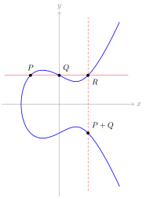

Chapter 4Elliptic curves as algebraic curves
This chapter follows [Sil09, Chapter III], with some material from [Mil20, Sections II.1, II.2, II.5 and II.6], and [Voi21, Chapters 2, 3, 5 and 10] for quaternion algebras and their orders. As in the previous two chapters, we do not assume that the ground field is perfect.
In Chapter 1 we met complex tori \(\C/\Lambda\): compact Riemann surfaces that are also abelian groups. The uniformization theorem (Theorem 1.7.1) identifies each of them with a smooth plane cubic \(E_{A,B}(\C)\), and under this identification the isogenies of Section 1.3 and the torsion subgroups \((\C/\Lambda)[m] \cong (\Z/m\Z)^2\) of Example 1.3.4 become statements about cubic curves. The goal of this chapter is to recover that whole picture over an arbitrary field \(k\), where there is no lattice to divide by. The tools are the ones developed in Chapters 2 and 3: the Riemann–Roch theorem replaces the Weierstrass \(\wp\)-function, the Picard group replaces the quotient \(\C/\Lambda\), and the invariant differential replaces \(dz\). Alongside, we compare \(E\) with the multiplicative group \(\Gm\), whose invariant differential, torsion points and Tate module are elementary (Examples 3.4.7 and 3.4.8). The comparison is summarized at the end of Section 4.5.
Situation 4.0.1. We keep Situation 2.0.1: \(k\) is an arbitrary field, not assumed perfect, \(\ksep \subseteq \kbar\) are a separable and an algebraic closure, and \(\Gal_k \coloneqq \Gal(\ksep/k)\). For a \(k\)-variety \(X\) and a field \(L \supseteq k\), recall that \(X_L\) is the base extension.
4.1 Weierstrass equations
Definition 4.1.1. An elliptic curve over \(k\) is a pair \((E, O)\), where \(E\) is a nice curve over \(k\) of genus \(1\) and \(O \in E(k)\). We usually write \(E\) for the pair. A morphism of elliptic curves \((E, O) \to (E', O')\) is a morphism of curves \(E \to E'\) sending \(O\) to \(O'\).
The rational point is part of the data. A nice curve of genus \(1\) need not have one: by a theorem of Selmer [Sel51], the smooth plane cubic \(3X^3 + 4Y^3 + 5Z^3 = 0\) over \(\Q\), which has genus \(1\) by Corollary 3.7.7, has no rational points, although it has points over \(\R\) and over every \(\Q_p\). Such curves will reappear in Section 4.8 and in Chapter 10.
The model for every elliptic curve is the smooth plane cubic \(y^2 = h(x)\) of Example 3.7.9. In characteristic \(2\) that equation is always singular, by the same example, so we need a more general one.
Definition 4.1.2. A Weierstrass equation over \(k\) is a projective plane cubic
\begin{equation} \label{eq:ec-weierstrass} Y^2Z + a_1XYZ + a_3YZ^2 = X^3 + a_2X^2Z + a_4XZ^2 + a_6Z^3 \tag{4.1.1} \end{equation}with \(a_1, a_2, a_3, a_4, a_6 \in k\), which on the affine patch \(Z \neq 0\) reads \(y^2 + a_1xy + a_3y = x^3 + a_2x^2 + a_4x + a_6\). Intersecting with the line at infinity \(Z = 0\) leaves \(X^3 = 0\), so the only point at infinity is the flex \(O \coloneqq (0 : 1 : 0)\). We define the \(b\)-invariants and \(c\)-invariants of the Weierstrass equation by
\begin{align*} b_2 &\coloneqq a_1^2 + 4a_2, & b_4 &\coloneqq 2a_4 + a_1a_3, \\ b_6 &\coloneqq a_3^2 + 4a_6, & b_8 &\coloneqq a_1^2a_6 + 4a_2a_6 - a_1a_3a_4 + a_2a_3^2 - a_4^2, \\ c_4 &\coloneqq b_2^2 - 24b_4, & c_6 &\coloneqq -b_2^3 + 36b_2b_4 - 216b_6, \end{align*}the discriminant \(\Delta \coloneqq -b_2^2b_8 - 8b_4^3 - 27b_6^2 + 9b_2b_4b_6\), and, when \(\Delta \neq 0\), the \(j\)-invariant \(j \coloneqq c_4^3/\Delta\). The invariant differential is
\begin{equation*} \omega \coloneqq \frac{dx}{2y + a_1x + a_3} = \frac{dy}{3x^2 + 2a_2x + a_4 - a_1y}. \end{equation*}These quantities satisfy \(4b_8 = b_2b_6 - b_4^2\) and \(1728\Delta = c_4^3 - c_6^2\).
A flex of a plane cubic is a smooth \(\kbar\)-point \(P\) whose tangent line meets the cubic at \(P\) with multiplicity \(3\). The tangent line at \(O\) is \(Z = 0\). The two expressions for \(\omega\) agree because \(f \coloneqq y^2 + a_1xy + a_3y - x^3 - a_2x^2 - a_4x - a_6\) satisfies \(\frac{\partial f}{\partial x}\,dx + \frac{\partial f}{\partial y}\,dy = 0\), and \(\partial f/\partial y = 2y + a_1x + a_3\).
Example 4.1.3 (Recalling the formulas in Magma). Over the field \(\Q(a_1, a_2, a_3, a_4, a_6)\) of rational functions in the coefficients, \eqref{eq:ec-weierstrass} is an elliptic curve, and Magma prints the quantities of Definition 4.1.2 for it as polynomials in the \(a_i\) [BCP97].
K<a1,a2,a3,a4,a6> := FunctionField(Rationals(), 5); E := EllipticCurve([a1, a2, a3, a4, a6]); aInvariants(E); // [a1, a2, a3, a4, a6] bInvariants(E); // [b2, b4, b6, b8] cInvariants(E); // [c4, c6]
Printing Discriminant(E) and jInvariant(E) gives expressions too long to read, but the
identities of Definition 4.1.2 fit on one line each. A true here is an
identity of rational functions with integer coefficients, so it holds for every Weierstrass
equation over every field.
b2, b4, b6, b8 := Explode(bInvariants(E)); c4, c6 := Explode(cInvariants(E)); 4*b8 eq b2*b6 - b4^2; 1728*Discriminant(E) eq c4^3 - c6^2; jInvariant(E) eq c4^3/Discriminant(E);
Lemma 4.1.4 (Short Weierstrass form). If \(\operatorname{char} k \neq 2\), completing the square in \(y\), and then, if also \(\operatorname{char} k \neq 3\), completing the cube in \(x\), brings the equation to the short form
\begin{equation} \label{eq:ec-short-weierstrass} y^2 = x^3 + Ax + B, \tag{4.1.2} \end{equation}whose discriminant, \(j\)-invariant and invariant differential are
\begin{equation*} \Delta = -16(4A^3 + 27B^2), \qquad j = 1728\,\frac{4A^3}{4A^3 + 27B^2}, \qquad \omega = \frac{dx}{2y}. \end{equation*}Proof.
Both steps are instances of the change of variables
\(x = u^2x' + r\), \(y = u^3y' + su^2x' + t\) with \(u \in k^\times\) and \(r, s, t \in k\),
which reappears in Theorem 4.1.6. Magma performs one with
Transformation, in the inverse convention: our \((u, r, s, t)\) is Magma's tuple
\([-r/u^2,\ -s/u,\ (rs - t)/u^3,\ 1/u]\). We translate once and for all, and use subst
again in the proofs below. The blocks of this section run in one session, in order.
// Weierstrass change of variables, as above: // x = u^2*x' + r, y = u^3*y' + s*u^2*x' + t. // Magma's Transformation inverts it, so translate the tuple. subst := func< E,u,r,s,t | Transformation(E, [BaseRing(E) | -r/u^2, -s/u, (r*s - t)/u^3, 1/u]) >;
If \(\operatorname{char} k \neq 2\), take \(u = 1\), \(r = 0\), \(s = -a_1/2\) and \(t = -a_3/2\). This makes the new \(a_1\) and \(a_3\) vanish, and the equation becomes \(y^2 = x^3 + \frac{b_2}{4}x^2 + \frac{b_4}{2}x + \frac{b_6}{4}\).
K<a1,a2,a3,a4,a6> := FunctionField(Rationals(), 5); E := EllipticCurve([a1,a2,a3,a4,a6]); b2, b4, b6, b8 := Explode(bInvariants(E)); c4, c6 := Explode(cInvariants(E)); E1 := subst(E, 1, 0, -a1/2, -a3/2); aInvariants(E1) eq [K | 0, b2/4, 0, b4/2, b6/4]; // true
If also \(\operatorname{char} k \neq 3\), take \(u = 1\) and \(r = -b_2/12\). This makes the new \(a_2\) vanish and leaves \eqref{eq:ec-short-weierstrass}, with \(A = -c_4/48\) and \(B = -c_6/864\).
E2 := subst(E1, 1, -b2/12, 0, 0); A := -c4/48; B := -c6/864; aInvariants(E2) eq [K | 0, 0, 0, A, B]; // true Discriminant(E2) eq -16*(4*A^3 + 27*B^2); // true jInvariant(E2) eq 1728*4*A^3/(4*A^3 + 27*B^2); // true Discriminant(E2) eq Discriminant(E); // true
The last line records that neither substitution changes \(\Delta\), as both have \(u = 1\). The same holds for \(j\) and for \(\omega\). The displayed formulas are those of Definition 4.1.2 read off the short form.
Weierstrass equations with non-zero discriminant, together with the point at infinity, define elliptic curves over any field \(k\).
Proposition 4.1.5. Let \(E\) be the plane cubic \eqref{eq:ec-weierstrass}.
- \(E\) is smooth if and only if \(\Delta \neq 0\).
- If \(\Delta \neq 0\), then \((E, O)\) is an elliptic curve over \(k\), and the invariant differential satisfies \(\div(\omega) = 0\).
Proof.
Write \(F\) for the cubic form in \eqref{eq:ec-weierstrass}. At \(O\) we have \(\partial F/\partial Z = Y^2 = 1\), so \(O\) is always a smooth point. That a singular point of the affine part exists if and only if \(\Delta = 0\) is [Sil09, Proposition III.1.4(a)], a computation over \(\kbar\). When \(\operatorname{char} k \neq 2, 3\) it is Example 3.7.9, by \eqref{eq:ec-short-weierstrass}.
If \(E\) is smooth, it is nice by Corollary 3.7.5, of genus \(1\) by Corollary 3.7.7, and \(O \in E(k)\). Finally, let \(\omega = dx/(\partial f/\partial y)\), so \(\div(\omega) = (3 - 3)O = 0\) by Proposition 3.7.6.
The converse is the first application of the Riemann–Roch theorem: every elliptic curve is a Weierstrass cubic. Example 3.5.7 already contains the idea, run backwards. The following is [Sil09, Proposition III.3.1].
Theorem 4.1.6. Let \((E, O)\) be an elliptic curve over \(k\).
- There are \(x, y \in k(E)\) such that the morphism \(E \to \PP^2_k\) given by \((x : y : 1)\) is an isomorphism onto a smooth Weierstrass cubic \eqref{eq:ec-weierstrass}, sending \(O\) to \((0 : 1 : 0)\). Moreover \(k(E) = k(x, y)\) and \([k(E) : k(x)] = 2\).
Any two such pairs, \((x, y)\) and \((x', y')\), are related by
\begin{equation} \label{eq:ec-change-of-variables} x = u^2x' + r, \qquad y = u^3y' + su^2x' + t, \tag{4.1.3} \end{equation}for some \(u \in k^\times\) and \(r, s, t \in k\).
The functions \(x\) and \(y\) are Weierstrass coordinates on \(E\).
Proof.
Since \(E\) has genus \(1\), Corollary 3.5.5 gives \(\ell(nO) = n\) for every \(n \geq 1\). So \(\mcL(O) = k\), and we may choose \(x \in \mcL(2O)\) and \(y \in \mcL(3O)\) with \(\{1, x\}\) and \(\{1, x, y\}\) bases. Then \(\ord_O(x) = -2\) and \(\ord_O(y) = -3\). The seven functions \(1, x, y, x^2, xy, y^2, x^3\) lie in the \(6\)-dimensional space \(\mcL(6O)\), so they satisfy a linear relation over \(k\). The only functions in the list with a pole of order \(6\) are \(y^2\) and \(x^3\), so both appear with non-zero coefficients, and rescaling \(x\) and \(y\) by elements of \(k^\times\) gives a Weierstrass equation. Let \(C\) be the cubic it defines. The rational map \(\varphi \coloneqq (x : y : 1)\colon E \dashrightarrow C\) is a morphism by Proposition 3.2.1, and \(\varphi(O) = (x/y : 1 : 1/y)(O) = (0 : 1 : 0)\).
The morphism \(x\colon E \to \PP^1_k\) pulls \(\infty\) back to \(2O\), so it has degree \(2\) by Proposition 3.2.8. Likewise \(y\) has degree \(3\). Hence \([k(E) : k(x, y)]\) divides \(2\) and \(3\), so \(k(E) = k(x, y)\) and \(\varphi\) is birational onto \(C\). If \(C\) were singular, then \(C_{\kbar}\), and so \(E_{\kbar}\), would be birational to \(\PP^1_{\kbar}\) [Sil09, Proposition III.1.6]. Compare Example 2.3.5. By Corollary 3.2.6 this would make the nice curve \(E_{\kbar}\) isomorphic to \(\PP^1_{\kbar}\), which has genus \(0\), whereas \(E_{\kbar}\) has genus \(1\) by Corollary 3.5.5. Since the genus is a geometric invariant, \(C\) is smooth, and \(\varphi\) is an isomorphism by Corollary 3.2.6.
For part 2, \(\{1, x\}\) and \(\{1, x'\}\) are both bases of \(\mcL(2O)\), and \(\{1, x, y\}\) and \(\{1, x', y'\}\) of \(\mcL(3O)\). So \(x = u_1x' + r\) and \(y = u_2y' + s_2x' + t\) with \(u_1, u_2 \in k^\times\). Comparing the coefficients of \(x'^3\) and \(y'^2\) in the two equations gives \(u_1^3 = u_2^2\), and \(u \coloneqq u_2/u_1\) does the job.
Proposition 4.1.7. Under the change of variables \eqref{eq:ec-change-of-variables}, the quantities of the primed equation satisfy
\begin{equation} \label{eq:ec-cov-coeffs} \begin{aligned} u a_1' &= a_1 + 2s, \\ u^2 a_2' &= a_2 - sa_1 + 3r - s^2, \\ u^3 a_3' &= a_3 + ra_1 + 2t, \\ u^4 a_4' &= a_4 - sa_3 + 2ra_2 - (t + rs)a_1 + 3r^2 - 2st, \\ u^6 a_6' &= a_6 + ra_4 + r^2a_2 + r^3 - ta_3 - t^2 - rta_1, \\ u^2 b_2' &= b_2 + 12r, \\ u^4 b_4' &= b_4 + rb_2 + 6r^2, \\ u^6 b_6' &= b_6 + 2rb_4 + r^2b_2 + 4r^3, \\ u^8 b_8' &= b_8 + 3rb_6 + 3r^2b_4 + r^3b_2 + 3r^4, \end{aligned} \tag{4.1.4} \end{equation}and
\begin{equation*} u^4c_4' = c_4, \qquad u^6c_6' = c_6, \qquad u^{12}\Delta' = \Delta, \qquad j' = j, \qquad u^{-1}\omega' = \omega. \end{equation*}In particular the \(j\)-invariant and the class of \(\Delta\) in \(k^\times/k^{\times 12}\) are invariants of the elliptic curve \(E\). In the short form \eqref{eq:ec-short-weierstrass}, the only changes of variables preserving the form are \(x = u^2x'\), \(y = u^3y'\), and they give \(A' = u^{-4}A\) and \(B' = u^{-6}B\).
Proof.
This is a direct computation, which we can do in Magma: over the function field in the five
coefficients and the four parameters of \eqref{eq:ec-change-of-variables}, a true is an
identity of rational functions, hence holds for every Weierstrass equation over every field.
L<a1,a2,a3,a4,a6,u,r,s,t> := FunctionField(Rationals(), 9); E := EllipticCurve([a1,a2,a3,a4,a6]); Ep := subst(E, u, r, s, t); a1p, a2p, a3p, a4p, a6p := Explode(aInvariants(Ep)); u*a1p eq a1 + 2*s; // true u^2*a2p eq a2 - s*a1 + 3*r - s^2; // true u^3*a3p eq a3 + r*a1 + 2*t; // true u^4*a4p eq a4 - s*a3 + 2*r*a2 - (t + r*s)*a1 + 3*r^2 - 2*s*t; // true u^6*a6p eq a6 + r*a4 + r^2*a2 + r^3 - t*a3 - t^2 - r*t*a1; // true b2, b4, b6, b8 := Explode(bInvariants(E)); b2p, b4p, b6p, b8p := Explode(bInvariants(Ep)); u^2*b2p eq b2 + 12*r; // true u^4*b4p eq b4 + r*b2 + 6*r^2; // true u^6*b6p eq b6 + 2*r*b4 + r^2*b2 + 4*r^3; // true u^8*b8p eq b8 + 3*r*b6 + 3*r^2*b4 + r^3*b2 + 3*r^4; // true c4, c6 := Explode(cInvariants(E)); c4p, c6p := Explode(cInvariants(Ep)); u^4*c4p eq c4; // true u^6*c6p eq c6; // true u^12*Discriminant(Ep) eq Discriminant(E); // true jInvariant(Ep) eq jInvariant(E); // true
For \(\omega\), differentiating \(x = u^2x' + r\) gives \(dx = u^2\,dx'\), while \(2y + a_1x + a_3 = u^3(2y' + a_1'x' + a_3')\), so \(\omega = u^{-1}\omega'\).
A change of variables preserving the short form \eqref{eq:ec-short-weierstrass} must have \(a_1' = a_3' = 0\), forcing \(s = t = 0\), and then \(a_2' = 0\) forces \(r = 0\). What is left rescales \(A\) and \(B\).
M<A,B,u> := FunctionField(Rationals(), 3); E := EllipticCurve([M | 0, 0, 0, A, B]); aInvariants(subst(E, u, 0, 0, 0)); // [0, 0, 0, A/u^4, B/u^6]
That is \(A' = u^{-4}A\) and \(B' = u^{-6}B\).
Remark 4.1.8. Chapter 1 uses the short form \eqref{eq:ec-short-weierstrass} (Example 1.6.3), and the discriminant of Lemma 4.1.4 explains the condition \(4A^3 + 27B^2 \neq 0\) there. Under the isomorphism of Theorem 1.7.1 we have \(x = \wp_\Lambda(z)\) and \(y = \frac{1}{2}\wp_\Lambda'(z)\), so \(\omega = \wp_\Lambda'(z)\,dz/\wp_\Lambda'(z) = dz\): the invariant differential is the translation-invariant differential \(dz\) on \(\C/\Lambda\). With \(A = -15G_4(\Lambda)\) and \(B = -35G_6(\Lambda)\), the \(j\)-invariant becomes a function of the lattice, and by Proposition 4.1.7 a function on \(\SL_2(\Z)\backslash\bbH\) (Proposition 1.8.1).
The \(j\)-invariant classifies elliptic curves up to isomorphism over \(\kbar\), but not over \(k\). The failure is already visible in the short form. Suppose \(\operatorname{char} k \neq 2\), let \(E\colon y^2 = x^3 + Ax + B\) and let \(d \in k^\times\). The quadratic twist of \(E\) by \(d\) is
\begin{equation*} E^d\colon y^2 = x^3 + d^2Ax + d^3B, \end{equation*}which is \(dy^2 = x^3 + Ax + B\) in the coordinates \(dx\) and \(d^2y\). So \((x, y) \mapsto (dx, d^{3/2}y)\) is an isomorphism \(E \to E^d\) over \(k(\sqrt{d})\), and \(j(E^d) = j(E)\). Suppose now that \(j(E) \neq 0, 1728\), that is \(AB \neq 0\). By Proposition 4.1.7 an isomorphism \(E \to E^d\) over \(k\) would be a change of variables \(x = u^2x'\), \(y = u^3y'\) with \(u^4 = d^{-2}\) and \(u^6 = d^{-3}\), forcing \(u^2 = d^{-1}\). So \(E\) and \(E^d\) are isomorphic over \(k\) exactly when \(d \in k^{\times 2}\), and the quadratic twists of \(E\) are indexed by \(d \in k^\times/k^{\times 2}\). They all share one \(j\)-invariant. For \(j = 0\) and \(j = 1728\) the curve has extra automorphisms and there are more twists than these. See Theorem 4.7.11 and Chapter 10.
Example 4.1.9. Take \(E\colon y^2 = x^3 + x + 1\) over \(\Q\) and \(d = -1\), so that \(E^{-1}\colon y^2 = x^3 + x - 1\). Here \(d^6 = 1\), so the two curves have the same discriminant \(-496\) as well as the same \(j\)-invariant \(6912/31\). They are nonetheless not isomorphic over \(\Q\), because \(-1 \notin \Q^{\times 2}\). They become isomorphic over \(\Q(i)\). So \(\Delta\) and \(j\) together do not determine an elliptic curve up to isomorphism over \(k\).
E := EllipticCurve([Rationals() | 0, 0, 0, 1, 1]); Ed := QuadraticTwist(E, -1); aInvariants(Ed); // [0, 0, 0, 1, -1] jInvariant(Ed) eq jInvariant(E); // true Discriminant(Ed) eq Discriminant(E); // true IsIsomorphic(E, Ed); // false K<i> := QuadraticField(-1); IsIsomorphic(ChangeRing(E, K), ChangeRing(Ed, K)); // true
The curves \(y^2 = x^3 - x\) and \(y^2 = x^3 + x\), which also share a \(j\)-invariant, are not quadratic twists of one another: each is its own twist by \(-1\). They are quartic twists, the extra twists that \(j = 1728\) admits.
Twists in general are the subject of Chapter 7, and those of elliptic curves of Chapter 10. The cubic twists of Section 4.8 are the other case we meet in this chapter.
Proposition 4.1.10.
- Two elliptic curves over \(k\) are isomorphic over \(\kbar\) if and only if they have the same \(j\)-invariant.
- Every \(j_0 \in k\) is the \(j\)-invariant of an elliptic curve over \(k\), namely the one listed here, where \(c \coloneqq 1/(j_0 - 1728)\).
| \(j_0\) | Weierstrass equation | \(\Delta\) | needs |
|---|---|---|---|
| \(\neq 0, 1728\) | \(y^2 + xy = x^3 - 36cx - c\) | \(j_0^2c^3\) | |
| \(0\) | \(y^2 + y = x^3\) | \(-27\) | \(\operatorname{char} k \neq 3\) |
| \(1728\) | \(y^2 = x^3 + x\) | \(-64\) | \(\operatorname{char} k \neq 2\) |
In characteristic \(2\) and \(3\) we have \(0 = 1728\), and exactly one of the last two rows applies, so the single special value is covered.
Proof.
In part 1, an isomorphism over \(\kbar\) is a change of variables \eqref{eq:ec-change-of-variables} over \(\kbar\), so it preserves \(j\) by Proposition 4.1.7. For the converse, suppose \(\operatorname{char} k \neq 2, 3\) and put both curves in the short form \eqref{eq:ec-short-weierstrass}. The changes of variables preserving that form are \(x = u^2x'\), \(y = u^3y'\), giving \(A' = u^{-4}A\) and \(B' = u^{-6}B\), so we must produce \(u \in \kbar^\times\) with \(u^4 = A/A'\) and \(u^6 = B/B'\). Now \(j = j'\) means \(A^3B'^2 = A'^3B^2\). If \(A = 0\), then \(A' = 0\), and \(u^6 = B/B'\) will do. If \(B = 0\), then \(B' = 0\), and \(u^4 = A/A'\) will do. Otherwise take \(u^4 = A/A'\). Then \((u^6)^2 = (A/A')^3 = (B/B')^2\), and replacing \(u\) by \(\sqrt{-1}\,u\) if necessary gives \(u^6 = B/B'\). The characteristics \(2\) and \(3\) need the normal forms of Proposition 4.1.12, and are finished after it.
For part 2, the first row has \(b_2 = 1\), \(b_4 = -72c\), \(b_6 = -4c\) and \(b_8 = -c - 1296c^2\), whence \(c_4 = 1 + 1728c\) and \(\Delta = j_0^2c^3\). Since \(j_0 = 1728 + 1/c\) we have \(c_4 = j_0c\), so \(j = c_4^3/\Delta = j_0^3c^3/(j_0^2c^3) = j_0\). The second row has \(b_6 = 1\) as its only non-zero \(b\), so \(\Delta = -27\) and \(c_4 = 0\), giving \(j = 0\). The third has \(b_4 = 2\) and \(b_8 = -1\), so \(\Delta = -64\) and \(c_4 = -48\), giving \(j = 1728\). Each row asks only that its own \(\Delta\) be non-zero, which is the condition listed.
Remark 4.1.11. If \(\Delta = 0\), the cubic \eqref{eq:ec-weierstrass} has exactly one singular point \(S\). It is a node (two distinct tangent directions) if \(c_4 \neq 0\), and a cusp (one tangent direction) if \(c_4 = 0\) [Sil09, Proposition III.1.4(a)]. In both cases the curve is birational to \(\PP^1\), as for the nodal cubic of Example 2.3.5 [Sil09, Proposition III.1.6]. These curves matter to us because an elliptic curve over \(\Q\) acquires such a singularity when its equation is reduced modulo a prime dividing \(\Delta\) (Chapter 6). See Proposition 4.2.11.
In characteristic \(2\) and \(3\) the short form \eqref{eq:ec-short-weierstrass} is not available, and the general equation \eqref{eq:ec-weierstrass} carries too many coefficients to compute with. The substitutions \eqref{eq:ec-change-of-variables} still cut it down to a short list of normal forms: two in each of these characteristics, according as \(j = 0\) or not.
Proposition 4.1.12. Let \(E\) be an elliptic curve over \(k\). Then the Weierstrass coordinates of Theorem 4.1.6 can be chosen so that the model \eqref{eq:ec-weierstrass} is the short form \eqref{eq:ec-short-weierstrass} when \(\operatorname{char} k \neq 2, 3\), and otherwise is the one listed here.
| \(\operatorname{char} k\) | case | Weierstrass equation | \(\Delta\) | \(j\) |
|---|---|---|---|---|
| \(3\) | \(j(E) \neq 0\) | \(y^2 = x^3 + a_2x^2 + a_6\) | \(-a_2^3a_6\) | \(-a_2^3/a_6\) |
| \(3\) | \(j(E) = 0\) | \(y^2 = x^3 + a_4x + a_6\) | \(-a_4^3\) | \(0\) |
| \(2\) | \(j(E) \neq 0\) | \(y^2 + xy = x^3 + a_2x^2 + a_6\) | \(a_6\) | \(1/a_6\) |
| \(2\) | \(j(E) = 0\) | \(y^2 + a_3y = x^3 + a_4x + a_6\) | \(a_3^4\) | \(0\) |
Proof.
The case \(\operatorname{char} k \neq 2, 3\) is the completion of the square and of the cube
that produced \eqref{eq:ec-short-weierstrass}. In the two remaining characteristics we start from a
model \eqref{eq:ec-weierstrass} and apply a substitution \eqref{eq:ec-change-of-variables},
reading off the new coefficients from the transformation table
[Sil09, Table 3.1]. Nothing deep goes into the choice of \(u, r, s, t\): one
only asks that certain coefficients become \(0\) or \(1\). Each step below can be watched
in Magma over the function field in the coefficients, in the characteristic at hand, with
subst as defined above. The blocks run in one session, in order, and each redefines the
\(a_i\) it needs.
Suppose \(\operatorname{char} k = 3\). Completing the square in \(y\) is \eqref{eq:ec-change-of-variables} with \(u = 1\), \(r = 0\), \(s = -a_1/2\) and \(t = -a_3/2\), and it gives \(y^2 = x^3 + a_2x^2 + a_4x + a_6\).
K<a1,a2,a3,a4,a6> := FunctionField(GF(3), 5); E := EllipticCurve([a1,a2,a3,a4,a6]); aInvariants(subst(E, 1, 0, -a1/2, -a3/2)); // a1 = a3 = 0
For such an equation a direct computation in characteristic \(3\) gives \(c_4 = a_2^2\) and \(\Delta = a_2^2a_4^2 - a_2^3a_6 - a_4^3\). So \(j = a_2^6/\Delta\), and \(j = 0\) if and only if \(a_2 = 0\).
L<a2,a4,a6> := FunctionField(GF(3), 3); D := EllipticCurve([L | 0, a2, 0, a4, a6]); cInvariants(D)[1] eq a2^2; // true Discriminant(D) eq a2^2*a4^2 - a2^3*a6 - a4^3; // true jInvariant(D) eq a2^6/Discriminant(D); // true
If \(j = 0\), the equation is already the one listed, with \(\Delta = -a_4^3\). If \(j \neq 0\), then \(a_2 \neq 0\), and \(x = x' + a_4/a_2\) turns the coefficient of \(x'\) into \(2a_2(a_4/a_2) + a_4 = 3a_4 = 0\), leaving the equation listed for \(j \neq 0\). Its discriminant is \(-a_2^3a_6\), so \(j = a_2^6/(-a_2^3a_6) = -a_2^3/a_6\).
D2 := subst(D, 1, a4/a2, 0, 0); a6new := aInvariants(D2)[5]; aInvariants(D2); // [0, a2, 0, 0, a6new] Discriminant(D2) eq -a2^3*a6new; // true jInvariant(D2) eq -a2^3/a6new; // true
Suppose \(\operatorname{char} k = 2\). Now \(c_4 = a_1^4\), so \(j = a_1^{12}/\Delta\), and \(j = 0\) if and only if \(a_1 = 0\). If \(j \neq 0\), the substitution
\begin{equation*} x = a_1^2x' + \frac{a_3}{a_1}, \qquad y = a_1^3y' + \frac{a_1^2a_4 + a_3^2}{a_1^3} \end{equation*}makes the new \(a_1\) equal to \(1\) and kills the new \(a_3\) and \(a_4\), leaving the equation listed for \(j \neq 0\). There \(b_2 = 1\), \(b_4 = b_6 = 0\) and \(b_8 = a_6\), so \(\Delta = a_6\) and \(j = 1/a_6\).
K<a1,a2,a3,a4,a6> := FunctionField(GF(2), 5); E := EllipticCurve([a1,a2,a3,a4,a6]); cInvariants(E)[1] eq a1^4; // true F := subst(E, a1, a3/a1, 0, (a1^2*a4 + a3^2)/a1^3); a6new := aInvariants(F)[5]; aInvariants(F); // [1, a2new, 0, 0, a6new] Discriminant(F) eq a6new; // true jInvariant(F) eq 1/a6new; // true
If \(j = 0\), then \(a_1 = 0\), and \(x = x' + a_2\), \(y = y'\) kills the new \(a_2\), since \(4a_2 = 0\), leaving the last equation of the table.
M<a2,a3,a4,a6> := FunctionField(GF(2), 4); G := EllipticCurve([M | 0, a2, a3, a4, a6]); G2 := subst(G, 1, a2, 0, 0); aInvariants(G2); // [0, 0, a3, a2^2 + a4, a2*a4 + a6] Discriminant(G2) eq a3^4; // true jInvariant(G2) eq 0; // true
There \(b_2 = b_4 = 0\) and \(b_6 = a_3^2\), so \(\Delta = -27a_3^4 = a_3^4\), while \(c_4 = 0\), so \(j = 0\). This is [Sil09, Proposition A.1.1].
Since \(\Delta \neq 0\), the two characteristic \(2\) rows force \(a_6 \neq 0\) and \(a_3 \neq 0\) respectively. In characteristic \(2\) there is no smooth Weierstrass equation with \(a_1 = a_3 = 0\).
The normal forms finish the converse in Proposition 4.1.10, which we left open in characteristic \(2\) and \(3\). Let \(E\) and \(E'\) be elliptic curves over \(\kbar\) with \(j(E) = j(E')\), both put in the form of the same row of the table. We must find a change of variables \eqref{eq:ec-change-of-variables} over \(\kbar\) carrying one to the other. In each case the substitutions preserving the row's shape are constrained first, by asking that the coefficients the row sets to \(0\) or \(1\) stay that way.
- Characteristic \(3\), \(j \neq 0\). In \(y^2 = x^3 + a_2x^2 + a_6\), the condition \(a_1' = 0\) forces \(s = 0\), then \(a_3' = 0\) forces \(t = 0\), and then \(a_4' = 0\) reads \(2ra_2 = 0\), so \(r = 0\) because \(a_2 \neq 0\). What is left is \(x = u^2x'\), \(y = u^3y'\), giving \(a_2' = a_2/u^2\) and \(a_6' = a_6/u^6\). Now \(j = -a_2^3/a_6\), so \(j = j'\) says \(a_2^3a_6' = a_2'^3a_6\), and \(u^2 \coloneqq a_2/a_2'\) does the job.
- Characteristic \(3\), \(j = 0\). In \(y^2 = x^3 + a_4x + a_6\) we again get \(s = t = 0\), while \(a_2' = 0\) is automatic since \(3r = 0\). So \(x = u^2x' + r\), \(y = u^3y'\), with \(a_4' = a_4/u^4\) and \(a_6' = (a_6 + ra_4 + r^3)/u^6\). Here \(a_4 \neq 0\), so choose \(u\) with \(u^4 = a_4/a_4'\), and then \(r\) as a root of \(r^3 + a_4r + a_6 - u^6a_6' = 0\).
- Characteristic \(2\), \(j \neq 0\). In \(y^2 + xy = x^3 + a_2x^2 + a_6\), the condition \(a_1' = 1\) forces \(u = 1\), then \(a_3' = 0\) forces \(r = 0\) and \(a_4' = 0\) forces \(t = 0\). So \(x = x'\), \(y = y' + sx'\), with \(a_6' = a_6\) and \(a_2' = a_2 + s + s^2\). Since \(j = 1/a_6\), the hypothesis \(j = j'\) already gives \(a_6' = a_6\), and it remains to take \(s\) a root of \(s^2 + s + a_2 + a_2' = 0\).
- Characteristic \(2\), \(j = 0\). In \(y^2 + a_3y = x^3 + a_4x + a_6\) the condition \(a_1' = 0\) is automatic and \(a_2' = 0\) forces \(r = s^2\). Then \(a_3' = a_3/u^3\), \(a_4' = (a_4 + sa_3 + s^4)/u^4\) and \(a_6' = (a_6 + s^2a_4 + s^6 + ta_3 + t^2)/u^6\). Here \(a_3 \neq 0\), so choose \(u\) with \(u^3 = a_3/a_3'\), then \(s\) a root of \(s^4 + a_3s + a_4 - u^4a_4' = 0\), and then \(t\) a root of \(t^2 + a_3t + a_6 + s^2a_4 + s^6 - u^6a_6' = 0\).
Each equation has a root because \(\kbar\) is algebraically closed, so Proposition 4.1.10 holds in every characteristic. Reading the same four computations with \(E = E'\) counts the automorphisms, which is Theorem 4.7.11.
Draft4.2 The group law
On \(\C/\Lambda\) the group law comes for free from addition in \(\C\). On an elliptic curve over \(k\) it comes from the group \(\Pic^0 E\) of degree-\(0\) divisors modulo principal divisors (Proposition 3.3.2): for a curve of genus \(1\), the map \(P \mapsto [P - O]\) is a bijection \(E(k) \to \Pic^0 E\).
Lemma 4.2.1. Let \(E\) be a nice curve of genus \(1\), and \(P, Q \in E(k)\). If \(P \sim Q\), then \(P = Q\).
Proof.
Say \(\div(f) = P - Q\). Then \(f \in \mcL(Q)\). Since \(\deg Q = 1 > 2g - 2 = 0\), Corollary 3.5.5 gives \(\ell(Q) = 1\), so \(\mcL(Q) = k\) and \(f\) is constant. Hence \(P - Q = \div(f) = 0\).
This is what distinguishes genus \(1\) from genus \(0\): on \(\PP^1_k\) any two rational points are linearly equivalent (Example 3.3.9).
Proposition 4.2.2. Let \((E, O)\) be an elliptic curve over \(k\).
Proof.
Uniqueness in part 1 is Lemma 4.2.1. For existence, \(\deg(D + O) = 1\), so \(\ell(D + O) = 1\) by Corollary 3.5.5. Let \(f\) span \(\mcL(D + O)\). Then \(\div(f) + D + O\) is an effective divisor of degree \(1\), so it is a single closed point \(P\) of degree \(1\), that is, a rational point, and \(D \sim P - O\). Part 2 follows [Sil09, Proposition III.3.4].
Note that the argument works over \(k\) itself, with no Galois descent: an effective divisor of degree \(1\) is automatically a rational point. Since \(O\) is a rational point, \(\Pic^0 E\) is also \((\Pic^0 E_{\ksep})^{\Gal_k}\) by Warning 3.3.8, so both readings of \(\Pic^0\) give \(E(k)\). This fails for a nice curve of genus \(1\) with no rational point, such as \(3X^3 + 4Y^3 + 5Z^3 = 0\) (Remark 4.8.14). We use \(\kappa\) to transport the group structure of \(\Pic^0 E\) to \(E(k)\). So \(P + Q\) is the unique rational point with
\begin{equation*} (P + Q) - O \sim (P - O) + (Q - O), \end{equation*}and \(O\) is the identity. For every field \(L \supseteq k\), the same construction on \(E_L\) makes \(E(L)\) a group, and \(E(k) \subseteq E(L)\) is a subgroup. If \(L/k\) is Galois, then \(\Gal(L/k)\) acts on \(E(L)\) by group automorphisms, with fixed points \(E(k)\) (Proposition 2.1.17).
Corollary 4.2.3. Let \(D = \sum n_P P\) be a divisor on \(E\) supported on points of \(E(k)\). Then \(D\) is principal if and only if \(\sum n_P = 0\) and \(\sum [n_P]P = O\) in \(E(k)\). More generally, there is an exact sequence
\begin{equation*} 1 \to k^\times \to k(E)^\times \xrightarrow{\div} \Div^0 E \xrightarrow{\sigma} E(k) \to 0. \end{equation*}For a smooth plane cubic whose base point is a flex, such as a Weierstrass cubic, this group law is the classical chord-and-tangent construction, illustrated in Figure 4.2.1. By Definition 4.1.2, the point at infinity of a Weierstrass cubic is a flex, with tangent line \(Z = 0\).
Proposition 4.2.4. Let \(E \subseteq \PP^2_k\) be a smooth plane cubic, let \(O \in E(k)\) be a flex, and give \(E(\kbar)\) the group law with identity \(O\).
- If a line meets \(E\) in \(P, Q, R \in E(\kbar)\), counted with intersection multiplicity, then \(P + Q + R = O\).
- If \(E\) is a Weierstrass cubic \eqref{eq:ec-weierstrass} and \(O = (0 : 1 : 0)\), then \(-P = (x_0, -y_0 - a_1x_0 - a_3)\) for \(P = (x_0, y_0)\).
So \(P + Q\) is obtained by drawing the line through \(P\) and \(Q\) (the tangent line if \(P = Q\)), taking its third intersection point \(R\) with \(E\), and reflecting: \(P + Q\) is the third intersection point of the line through \(R\) and \(O\).
Proof.
We may assume that \(k = \kbar\). Let \(L_O\) be a linear form defining the tangent line at \(O\), which meets \(E\) only at \(O\), with multiplicity \(3\). For a Weierstrass cubic, \(L_O = Z\) (Definition 4.1.2). Let \(L\) be a linear form defining the line. On a smooth curve the intersection number at a closed point \(P\) is \(\ord_P(L/L_O)\deg P\) away from \(L_O = 0\) (see the proof of Proposition 3.7.6), so by Theorem 3.7.4
\begin{equation*} \div(L/L_O) = P + Q + R - 3O. \end{equation*}So \((P - O) + (Q - O) + (R - O) \sim 0\), which is part 1. For part 2, the vertical line \(X - x_0Z\) passes through \(O\), and its other two intersection points with \(E\) are the roots in \(y\) of \(f(x_0, y) = 0\), whose sum is \(-a_1x_0 - a_3\). Part 1 with \(R = O\) gives part 2.

To compute the third intersection point we expand the cubic form along a line. For vectors \(P, Q \in k^3\) we write \(\nabla F(P) \cdot Q \coloneqq \sum_i \frac{\partial F}{\partial X_i}(P)\, Q_i\).
Lemma 4.2.5 (Polar expansion). Let \(F \in k[X, Y, Z]\) be a cubic form, and \(P, Q \in k^3\). Then, for \(s, t \in k\),
\begin{equation} \label{eq:ec-polar-expansion} F(sP + tQ) = s^3 F(P) + s^2t\, \nabla F(P) \cdot Q + st^2\, \nabla F(Q) \cdot P + t^3 F(Q). \tag{4.2.1} \end{equation}Proof.
Since \(F\) is homogeneous of degree \(3\), \(F(sP + tQ)\) is a form of degree \(3\) in \(s\) and \(t\), say \(\sum_{m = 0}^3 c_m s^{3 - m}t^m\), with \(c_0 = F(P)\) and \(c_3 = F(Q)\). Setting \(s = 1\), \(c_1\) is the coefficient of \(t\) in the polynomial \(F(P + tQ) \in k[t]\), which is its derivative at \(t = 0\). By the chain rule for polynomials, this is \(\nabla F(P) \cdot Q\). Exchanging the roles of \(P\) and \(Q\) gives \(c_2 = \nabla F(Q) \cdot P\).
The tangent line to \(E\) at a smooth point \(P\) is \(\{\nabla F(P) \cdot V = 0\}\), so the coefficient \(\nabla F(P) \cdot Q\) vanishes exactly when \(Q\) lies on the tangent line at \(P\). This turns the chord-and-tangent construction into formulas in homogeneous coordinates.
Proposition 4.2.6. Let \(E = V_+(F) \subseteq \PP^2_k\) be a smooth plane cubic with a flex \(O \in E(k)\), and give \(E(\kbar)\) the group law with identity \(O\), as in Proposition 4.2.4. We write \(\kbar\)-points as vectors in \(\kbar^3\), and the formulas below are homogeneous.
- Chord. Let \(P_1 \neq P_2\) be points of \(E(\kbar)\), and set \(A \coloneqq \nabla F(P_1) \cdot P_2\) and \(B \coloneqq \nabla F(P_2) \cdot P_1\). Then \(A\) and \(B\) do not both vanish, the line through \(P_1\) and \(P_2\) meets \(E\) in the third intersection point \(R \coloneqq BP_1 - AP_2\), and \(P_1 + P_2 = -R\).
- Tangent. Let \(P \in E(\kbar)\), and let \(Q \in \kbar^3\) be a vector on the tangent line at \(P\), that is \(\nabla F(P) \cdot Q = 0\), which is not a multiple of \(P\). Then \(F(Q)\) and \(\nabla F(Q) \cdot P\) do not both vanish, the tangent line meets \(E\) again in \(R \coloneqq F(Q)P - (\nabla F(Q) \cdot P)\,Q\), and \([2]P = -R\).
- Weierstrass cubics. If \(E\) is the Weierstrass cubic \eqref{eq:ec-weierstrass} with \(O = (0 : 1 : 0)\), then \(-(X : Y : Z) = (X : -Y - a_1X - a_3Z : Z)\), and for \(P \neq O\) the vector \(Q \coloneqq \bigl(\frac{\partial F}{\partial Y}(P), -\frac{\partial F}{\partial X}(P), 0\bigr)\) satisfies the hypotheses of part 2.
Proof.
For part 1, \(F(P_1) = F(P_2) = 0\), so \eqref{eq:ec-polar-expansion} reads \(F(sP_1 + tP_2) = st(As + Bt)\). If \(A = B = 0\), this vanishes identically, so the line would be a component of \(E\), which is impossible since \(E\) is geometrically integral (Corollary 3.7.5). Hence the line meets \(E\) at \((s : t) = (1 : 0)\), \((0 : 1)\) and \((B : -A)\), that is, at \(P_1\), \(P_2\) and \(R\). If \(A = 0\), then \(P_2\) lies on the tangent line at \(P_1\), and \(R = P_1\) is the tangency, counted twice. Now \(P_1 + P_2 + R = O\) by Proposition 4.2.4.
For part 2, \(F(P) = 0\) and \(\nabla F(P) \cdot Q = 0\), so \(F(sP + tQ) = t^2\bigl(s\,\nabla F(Q) \cdot P + tF(Q)\bigr)\). The double root at \(t = 0\) is the tangency at \(P\), and the remaining root \((s : t) = \bigl(F(Q) : -\nabla F(Q) \cdot P\bigr)\) is \(R\). As before the two coefficients cannot both vanish. Then \(P + P + R = O\).
For part 3, negation is part 2 of Proposition 4.2.4, homogenized. The vector \(Q\) satisfies \(\nabla F(P) \cdot Q = \frac{\partial F}{\partial X} \frac{\partial F}{\partial Y} - \frac{\partial F}{\partial Y} \frac{\partial F}{\partial X} = 0\). It is non-zero: if both partial derivatives vanished at \(P\), the Euler relation \(X \frac{\partial F}{\partial X} + Y \frac{\partial F}{\partial Y} + Z \frac{\partial F}{\partial Z} = 3F\) evaluated at \(P\) would give \(Z_0 \frac{\partial F}{\partial Z}(P) = 0\), so, as \(Z_0 \neq 0\) for \(P \neq O\), the \(\kbar\)-point \(P\) would be singular. Finally, \(Q\) has third coordinate \(0\) and \(P\) does not, so \(Q\) is not a multiple of \(P\).
For \(P = O\) there is nothing to compute, since \([2]O = O\). Reading these formulas on the affine patch \(Z = 1\), with the line written as \(y = \lambda x + \nu\), gives the classical algorithm.
Algorithm 4.2.7 (Group law). Let \(E\) be a smooth Weierstrass cubic \eqref{eq:ec-weierstrass}, and \(P_i = (x_i, y_i) \in E(k)\) for \(i = 1, 2\).
- If \(x_1 = x_2\) and \(y_1 + y_2 + a_1x_2 + a_3 = 0\), then \(P_1 + P_2 = O\).
Otherwise set
\begin{align*} \lambda &\coloneqq \frac{y_2 - y_1}{x_2 - x_1}, & \nu &\coloneqq \frac{y_1x_2 - y_2x_1}{x_2 - x_1} && \text{if } x_1 \neq x_2, \\ \lambda &\coloneqq \frac{3x_1^2 + 2a_2x_1 + a_4 - a_1y_1}{2y_1 + a_1x_1 + a_3}, & \nu &\coloneqq \frac{-x_1^3 + a_4x_1 + 2a_6 - a_3y_1}{2y_1 + a_1x_1 + a_3} && \text{if } x_1 = x_2, \end{align*}so that \(y = \lambda x + \nu\) is the line through \(P_1\) and \(P_2\), or the tangent line if \(P_1 = P_2\). Then \(P_1 + P_2 = (x_3, y_3)\) with
\begin{equation*} x_3 = \lambda^2 + a_1\lambda - a_2 - x_1 - x_2, \qquad y_3 = -(\lambda + a_1)x_3 - \nu - a_3. \end{equation*}
In particular, for the short form \eqref{eq:ec-short-weierstrass} and \(P = (x, y)\) with \(y \neq 0\), the duplication formula is
\begin{equation*} x([2]P) = \frac{x^4 - 2Ax^2 - 8Bx + A^2}{4(x^3 + Ax + B)}. \end{equation*}Proof.
Substitute \(y = \lambda x + \nu\) into the equation of \(E\). This is \eqref{eq:ec-polar-expansion} on the patch \(Z = 1\), with the line parametrized by \(x\) instead of \((s : t)\). The resulting cubic in \(x\) has roots \(x_1\), \(x_2\) and \(x_3\), and the coefficient of \(x^2\) gives \(x_1 + x_2 + x_3 = \lambda^2 + a_1\lambda - a_2\). Then negate, by part 3 of Proposition 4.2.6 [Sil09, Algorithm III.2.3].
Example 4.2.8. On \(E\colon y^2 = x^3 + 17\) over \(\Q\), let \(P_1 \coloneqq (-2, 3)\) and \(P_2 \coloneqq (-1, 4)\). The line through them has \(\lambda = 1\), \(\nu = 5\), so \(x_3 = 1 + 2 + 1 = 4\), \(y_3 = -4 - 5 = -9\), and \(P_1 + P_2 = (4, -9)\). Likewise \([2]P_1 = (8, -23)\) and \([2]P_2 = (137/64, -2651/512)\). Denominators appear quickly. The Mordell–Weil theorem (Chapter 8) says that nonetheless \(E(\Q)\) is finitely generated.
Example 4.2.9. A point \(P \neq O\) of \(E(\kbar)\) satisfies \([2]P = O\) if and only if \(P = -P\), i.e. if and only if \(2y + a_1x + a_3 = 0\) at \(P\). Suppose \(\operatorname{char} k \neq 2\), and let \(E\colon y^2 = (x - e_1)(x - e_2)(x - e_3)\) with distinct \(e_i \in k\), and \(P_i \coloneqq (e_i, 0)\), as in Example 3.3.10. The divisors computed there,
\begin{equation*} \div(x - e_i) = 2P_i - 2O, \qquad \div(y) = P_1 + P_2 + P_3 - 3O, \end{equation*}say, by Corollary 4.2.3, that \([2]P_i = O\) and \(P_1 + P_2 + P_3 = O\). So
\begin{equation*} \{O, P_1, P_2, P_3\} \cong (\Z/2\Z)^2, \end{equation*}exactly as for \((\C/\Lambda)[2]\) in Example 1.3.4.
The group law is given by morphisms.
Theorem 4.2.10. Let \(E\) be an elliptic curve over \(k\). The formulas of Algorithm 4.2.7 define morphisms of \(k\)-varieties
\begin{equation*} +\colon E \times E \to E, \qquad -\colon E \to E. \end{equation*}In particular, for \(Q \in E(k)\), translation \(\tau_Q\colon E \to E\), \(P \mapsto P + Q\), is an isomorphism of curves.
Proof.
Negation is a rational map \(E \dashrightarrow E\), hence a morphism by Proposition 3.2.1. For addition, see [Sil09, Theorem III.3.6]: one shows that \(\tau_Q\) is a morphism for each \(Q\), and then that the rational map \(E \times E \dashrightarrow E\) is regular everywhere by translating.
So an elliptic curve is a group variety (Definition 2.1.7), an abelian variety of dimension \(1\). We end the section with the singular Weierstrass cubics of Remark 4.1.11: removing the singular point leaves one of the group varieties \(\Ga\), \(\Gm\), \(\Gm^{(d)}\) of Example 2.1.8. We follow [Poo08, Section 6.3] and [Mil20, Section II.3].
Let \(E\) be a Weierstrass cubic \eqref{eq:ec-weierstrass} over \(k\) with \(\Delta = 0\), let \(S\) be its singular point, and let \(E^{\ns} \coloneqq E - \{S\}\). The point \(O\) is nonsingular (Proposition 4.1.5), so \(S\) is affine. Suppose that \(S \in E(k)\). The change of variables \eqref{eq:ec-change-of-variables} with \(u = 1\), \(r = x(S)\), \(s = 0\) and \(t = y(S)\) moves \(S\) to \((0, 0)\) and does not change \(c_4\). Then \(a_6 = 0\) because \(S\) lies on \(E\), and \(a_4 = a_3 = 0\) because the partial derivatives vanish at \(S\), so
\begin{equation} \label{eq:ec-singular-normal-form} \begin{gathered} E\colon y^2 + a_1xy = x^3 + a_2x^2, \\ b_2 = a_1^2 + 4a_2, \qquad b_4 = 0, \qquad c_4 = b_2^2. \end{gathered} \tag{4.2.2} \end{equation}The tangent cone at \(S\) is \(y^2 + a_1xy - a_2x^2 = 0\), and the slopes of the tangent lines are the roots of \(T^2 + a_1T - a_2\). Let
\begin{equation*} L \coloneqq k[T]/(T^2 + a_1T - a_2) \end{equation*}be the algebra of tangent slopes, and let \(\alpha\) and \(\alpha' = -a_1 - \alpha\) be the images of the roots. Its discriminant is \(b_2\), so \(L\) is separable exactly when \(c_4 \neq 0\): then \(S\) is a node, with two tangent directions, and otherwise a cusp (Remark 4.1.11). If \(c_4 \neq 0\), then \(L \cong L_d\) (2.1.1), with
\begin{equation} \label{eq:ec-node-d} d \coloneqq b_2 = a_1^2 + 4a_2 \quad\text{if } \operatorname{char} k \neq 2, \qquad d \coloneqq a_2/a_1^2 \quad\text{if } \operatorname{char} k = 2, \tag{4.2.3} \end{equation}through \(t \mapsto 2\alpha + a_1\), respectively \(t \mapsto \alpha/a_1\). If \(c_4 = 0\), then \(T^2 + a_1T - a_2 = (T - \beta)^2\) over \(\kbar\), and the tangent line at \(S\) is \(y = \beta x\).
Proposition 4.2.11. Let \(E\) be a Weierstrass cubic over \(k\) with \(\Delta = 0\), whose singular point \(S\) is a rational point, put in the form \eqref{eq:ec-singular-normal-form}. For every field \(K \supseteq k\), the chord-and-tangent construction of Proposition 4.2.4 makes \(E^{\ns}(K)\) an abelian group with identity \(O\), and \(E^{\ns}\) is a group variety.
-
\begin{equation*}
P \mapsto \frac{y - \alpha x}{y - \alpha' x}
\end{equation*}
is an isomorphism of group varieties \(E^{\ns} \to \Gm^{(d)}\), with \(d\) as in \eqref{eq:ec-node-d}. In particular \(E^{\ns} \cong \Gm\) if the slopes of the tangent lines at \(S\) lie in \(k\).
Cusp. If \(c_4 = 0\) and the tangent line \(y = \beta x\) at \(S\) is defined over \(k\), then
\begin{equation*} P \mapsto \frac{x}{y - \beta x} \end{equation*}is an isomorphism of group varieties \(E^{\ns} \to \Ga\).
Both hypotheses on \(S\) hold if \(k\) is perfect, and the one on the tangent line holds if \(\operatorname{char} k \neq 2\), where \(\beta = -a_1/2\). Over \(\kbar\), these are the isomorphisms \(E^{\ns}(\kbar) \cong \kbar^\times\) and \(E^{\ns}(\kbar) \cong \kbar\) of [Sil09, Proposition III.2.5].
Proof.
The composition law. Let \(F\) be the cubic form of \(E\). A line through \(S\) meets \(E\) at \(S\) with multiplicity at least \(2\), since all partial derivatives of \(F\) vanish at \(S\). So a line through two points of \(E^{\ns}(K)\), or tangent to \(E\) at one, does not pass through \(S\), and its third intersection point with \(E\), counted with multiplicity as a root of the restriction of \(F\) to the line, lies in \(E^{\ns}(K)\). As in Proposition 4.2.4, define \(-P\) as the third intersection point of the line through \(P\) and \(O\), and \(P + Q \coloneqq -R\), where \(R\) is the third intersection point of the line through \(P\) and \(Q\). Suppose that \(\varphi\colon E^{\ns}(K) \to G(K)\) is a bijection onto the \(K\)-points of a group variety \(G\), written additively, with \(\varphi(O) = 0\), and such that whenever \(P_1, P_2, P_3 \in E^{\ns}(K)\) are the three intersection points of a line with \(E\),
\begin{equation} \label{eq:ec-singular-collinear} \varphi(P_1) + \varphi(P_2) + \varphi(P_3) = 0. \tag{4.2.4} \end{equation}Then \(\varphi(-P) = -\varphi(P)\) and \(\varphi(P + Q) = -\varphi(R) = \varphi(P) + \varphi(Q)\). So the composition law is transported from \(G(K)\): it is associative, \(E^{\ns}(K)\) is an abelian group, and \(\varphi\) is an isomorphism. If moreover \(\varphi\) is an isomorphism of varieties \(E^{\ns} \to G\), then the group law of \(E^{\ns}\) is given by morphisms, and \(\varphi\) is an isomorphism of group varieties.
The cusp. Substituting \(y + \beta x\) for \(y\), a change of variables over \(k\), turns \eqref{eq:ec-singular-normal-form} into \(y^2 = x^3\), that is, \(Y^2Z = X^3\), and the map into \(P \mapsto x/y = X/Y\). On \(E^{\ns}\) we have \(Y \neq 0\), since \(Y = 0\) forces \(X = 0\), which is \(S\). So \(t \mapsto (t : 1 : t^3)\) is an isomorphism \(\Ga \to E^{\ns}\), inverse to \(X/Y\), with \(t = 0\) going to \(O\). A line \(aX + bY + cZ = 0\) not through \(S = (0 : 0 : 1)\) has \(c \neq 0\), and it meets \(E\) at the \(\kbar\)-points with parameters the roots of \(ct^3 + at + b\). Since this cubic has no \(t^2\) term, the three roots add up to \(0\), which is \eqref{eq:ec-singular-collinear} [Poo08, Section 6.3].
The node, split. Suppose first that \(\alpha, \alpha' \in k\). The coordinates \(U \coloneqq Y - \alpha X\), \(W \coloneqq Y - \alpha' X\) and \(Z\) are projective coordinates on \(\PP^2\), since \(\alpha \neq \alpha'\). In them \(S = (0 : 0 : 1)\), \(O = (1 : 1 : 0)\), \(X = (U - W)/(\alpha' - \alpha)\), and \(E\) is
\begin{equation*} c\,UWZ = (U - W)^3, \qquad c \coloneqq (\alpha' - \alpha)^3, \end{equation*}because \(Y^2 + a_1XY - a_2X^2 = UW\). On \(E^{\ns}\), \(U\) and \(W\) are non-zero, since either one vanishing forces the other to, which is \(S\). So \(\varphi \coloneqq U/W\) is a morphism \(E^{\ns} \to \Gm\), and
\begin{equation*} r \mapsto \bigl(c\,r^2 : c\,r : (r - 1)^3\bigr) \end{equation*}is its inverse, with \(r = 1\) going to \(O\). A line not through \(S\) is \(Z = \lambda U + \mu W\), and it meets \(E\) at the \(\kbar\)-points with \(r = U/W\) a root of \((r - 1)^3 - c\,r(\lambda r + \mu)\). This cubic is monic with constant term \(-1\), so the product of the three roots is \(1\), which is \eqref{eq:ec-singular-collinear}, written multiplicatively [Mil20, Section II.3]. Then \(\Gm \cong \Gm^{(d)}\) by part 1 of Proposition 2.1.9, through \(x + yt \mapsto x + \delta y\) with \(\delta = 2\alpha + a_1\), respectively \(\alpha/a_1\), and the composite is the map of part 1.
The node, in general. Since \((y - \alpha x)(y - \alpha' x) = x^3\) on \(E\),
\begin{equation*} \frac{y - \alpha x}{y - \alpha' x} = \frac{(y - \alpha x)^2}{x^3} = \frac{y^2 + a_2x^2}{x^3} - \frac{2y + a_1x}{x^2}\,\alpha, \end{equation*}using \(\alpha^2 = a_2 - a_1\alpha\). Its coordinates in the basis \(1, \alpha\) of \(L\) are rational functions defined over \(k\), and its norm is \(1\). So it is a morphism \(\Phi\colon E^{\ns} \to \Gm^{(d)}\) defined over \(k\). Over \(L\), where \(\alpha, \alpha'\) are rational, \(\Phi\) is the isomorphism of the split case. Its inverse is invariant under \(\Gal(L/k)\), hence defined over \(k\), and \(\Phi\) is an isomorphism. For a field \(K \supseteq k\), the identity \eqref{eq:ec-singular-collinear} for \(\Phi\) holds in \(\Gm^{(d)}(K) \subseteq \Gm^{(d)}(K \otimes_k L)\), where it holds by the split case.
Draft4.3 Isogenies
By Proposition 1.3.1, every holomorphic map of complex tori is a homomorphism followed by a translation, and holomorphic homomorphisms are the maps \(z \mapsto \alpha z\) with \(\alpha\Lambda_1 \subseteq \Lambda_2\) (Corollary 1.3.2). We now prove the algebraic analogue.
Definition 4.3.1. Let \(E_1\) and \(E_2\) be elliptic curves over \(k\). An isogeny is a morphism \(\varphi\colon E_1 \to E_2\) with \(\varphi(O_1) = O_2\). By Proposition 3.2.2, either \(\varphi = 0\) is constant, or \(\varphi\) is surjective and has a degree (Definition 3.2.5). We set \(\deg 0 \coloneqq 0\). The curves are isogenous if there is a non-zero isogeny between them. We write \(\Hom(E_1, E_2)\) for the set of isogenies, \(\End(E) \coloneqq \Hom(E, E)\) and \(\Aut(E)\) for the invertible elements of \(\End(E)\). For a field \(L \supseteq k\), the isogenies after base extension to \(L\) are the elements of \(\Hom(E_{1,L}, E_{2,L})\), \(\End(E_L)\) and \(\Aut(E_L)\).
Unlike Definition 1.3.3, we allow the zero map. By Remark 2.3.2, elements of \(\Hom(E_1, E_2)\) are morphisms over \(k\), and \(\Hom(E_1, E_2) \subseteq \Hom(E_{1,\kbar}, E_{2,\kbar})\). Silverman writes \(\Hom(E_1, E_2)\) for the latter. By Theorem 4.2.10, \(\Hom(E_1, E_2)\) is a group under \((\varphi + \psi)(P) \coloneqq \varphi(P) + \psi(P)\), and \(\End(E)\) is a ring under composition.
Example 4.3.2. For \(m \in \Z\), the multiplication by \(m\) map \([m]\colon E \to E\) is an isogeny, by Theorem 4.2.10. Its kernel is the group scheme \(E[m]\), and \(E[m](\kbar)\) is the \(m\)-torsion subgroup of \(E(\kbar)\).
Example 4.3.3. Suppose \(\operatorname{char} k = p > 0\) and \(q = p^r\). The relative Frobenius morphism \(\Frob\colon E \to E^{(q)}\) of Definition 3.2.11 sends \((0 : 1 : 0)\) to \((0 : 1 : 0)\), and \(E^{(q)}\) is the Weierstrass cubic with coefficients \(a_i^q\), which has discriminant \(\Delta^q \neq 0\). So \(\Frob\) is an isogeny, purely inseparable of degree \(q\) by Proposition 3.2.12. If \(E\) is defined over \(\F_q\), then \(\Frob \in \End(E)\) (Example 3.2.15).
Example 4.3.4. If \(\operatorname{char} k \neq 2\) and \(i \in k\) is a square root of \(-1\), then \([i](x, y) \coloneqq (-x, iy)\) is an automorphism of \(y^2 = x^3 + x\) with \([i]^2 = [-1]\).
Example 4.3.5. For \(Q \in E(k)\), \(Q \neq O\), the translation \(\tau_Q\) is a morphism but not an isogeny. Every morphism \(\psi\colon E_1 \to E_2\) is \(\tau_{\psi(O_1)} \circ \varphi\) with \(\varphi \coloneqq \tau_{-\psi(O_1)} \circ \psi\) an isogeny, as in Proposition 1.3.1.
Theorem 4.3.6. An isogeny \(\varphi\colon E_1 \to E_2\) is a group homomorphism \(E_1(L) \to E_2(L)\), for every field \(L \supseteq k\).
Proof.
After base extension we may assume \(L = k\), and that \(\varphi \neq 0\). By Proposition 3.3.6, \(\varphi_*\colon \Pic^0 E_1 \to \Pic^0 E_2\) is a homomorphism, and \(\varphi_*(P - O_1) = \varphi(P) - O_2\) for \(P \in E_1(k)\), because rational points have residue degree \(1\). So \(\varphi = \kappa_2^{-1} \circ \varphi_* \circ \kappa_1\) on \(E_1(k)\), a composition of homomorphisms (Proposition 4.2.2) [Sil09, Theorem III.4.8].
Proposition 4.3.7.
Proof.
Part 1 is [Sil09, Proposition III.4.2(a)]. When \(\operatorname{char} k \nmid m\) it also follows from Corollary 4.4.3 below. Given part 1, \([m] \circ \varphi = 0\) forces \(\varphi = 0\), since \(\deg\) is multiplicative and non-constant morphisms compose to non-constant morphisms. This gives parts 2 and 3.
We write \(\ker\varphi\) for the kernel of \(\varphi\) on \(E_1(\kbar)\). The kernel of a non-zero isogeny is finite, being a fiber. The next theorem is the analogue of Lemma 1.3.6. It is the Galois theory of function fields of elliptic curves.
Theorem 4.3.8. Let \(\varphi\colon E_1 \to E_2\) be a non-zero isogeny.
- For every \(Q \in E_2(\kbar)\), the fiber \(\varphi^{-1}(Q) \subseteq E_1(\kbar)\) has \(\deg_s \varphi\) elements, and \(e_\varphi(P) = \deg_i \varphi\) for every \(P \in E_1(\kbar)\).
- Suppose \(\varphi\) is separable. Then \(\varphi\) is unramified, \(\#\ker\varphi = \deg\varphi\), and \(\kbar(E_1)/\varphi^*\kbar(E_2)\) is a Galois extension, with Galois group \(\ker\varphi\) acting by \(T \mapsto \tau_T^*\).
Proof.
By Proposition 3.2.8, all but finitely many fibers have \(\deg_s\varphi\) elements. But for \(Q, Q' \in E_2(\kbar)\) with \(\varphi(P) = Q\) and \(\varphi(P') = Q'\), translation by \(P' - P\) is a bijection \(\varphi^{-1}(Q) \to \varphi^{-1}(Q')\), by Theorem 4.3.6, and it preserves ramification indices. So all fibers have the same size and the same ramification indices, and part 1 follows from \(\sum_{P \mapsto Q} e_\varphi(P) = \deg\varphi\). In part 2, \(e_\varphi = 1\), so \(\#\ker\varphi = \deg\varphi\). The translations \(\tau_T\), \(T \in \ker\varphi\), give \(\deg\varphi\) distinct automorphisms of \(\kbar(E_1)\) over \(\varphi^*\kbar(E_2)\), so the extension is Galois [Sil09, Theorem III.4.10].
If \(\varphi\) is separable, the scheme-theoretic fiber \(\varphi^{-1}(O_2)\) is étale over \(k\), so \(\ker\varphi \subseteq E_1(\ksep)\), and it is a \(\Gal_k\)-stable subgroup. So an isogeny determines a finite \(\Gal_k\)-module. Conversely, every finite subgroup is a kernel. This replaces the lattice \(\Lambda_2 \supseteq \Lambda_1\) of Chapter 1.
Proposition 4.3.9. Let \(\Phi \subseteq E(\kbar)\) be a finite subgroup. There are an elliptic curve \(E'\) over \(\kbar\), unique up to isomorphism, and a separable isogeny \(\varphi\colon E_{\kbar} \to E'\) with \(\ker\varphi = \Phi\). We write \(E/\Phi \coloneqq E'\). If \(\Phi \subseteq E(\ksep)\) is \(\Gal_k\)-stable, then \(E'\) and \(\varphi\) can be defined over \(k\). Moreover, if \(\varphi\colon E_1 \to E_2\) is separable and \(\psi\colon E_1 \to E_3\) is an isogeny with \(\ker\varphi \subseteq \ker\psi\), then \(\psi = \lambda \circ \varphi\) for a unique isogeny \(\lambda\colon E_2 \to E_3\).
Proof.
Take \(E'\) to be the nice curve with function field \(\kbar(E)^\Phi\), the fixed field of the translations \(\tau_T^*\), \(T \in \Phi\) (Theorem 3.2.3). See [Sil09, Proposition III.4.12, Remarks III.4.13.1 and III.4.13.2, and Corollary III.4.11].
Over \(\C\), the structure \((\C/\Lambda)[N] \cong (\Z/N\Z)^2\) was immediate from \((\C/\Lambda)[N] = \frac{1}{N}\Lambda/\Lambda\). Over \(k\) we know from Theorem 4.3.8 that \(\#E[N](\kbar) = \deg_s[N]\), so what we need is \(\deg[N] = N^2\). The tool is the dual isogeny, the algebraic analogue of Theorem 1.3.8.
Theorem 4.3.10. Let \(\varphi\colon E_1 \to E_2\) be an isogeny of degree \(d\).
- There is a unique isogeny \(\hat\varphi\colon E_2 \to E_1\), the dual isogeny, with \(\hat\varphi \circ \varphi = [d]\). If \(\varphi \neq 0\), then on rational points \(\hat\varphi = \sigma \circ \varphi^* \circ \kappa_2\), that is, \(Q \mapsto \sigma\bigl(\varphi^*(Q - O_2)\bigr)\), with \(\sigma\) as in Proposition 4.2.2. We set \(\hat 0 \coloneqq 0\).
- \(\varphi \circ \hat\varphi = [d]\) on \(E_2\).
- \(\widehat{\lambda \circ \varphi} = \hat\varphi \circ \hat\lambda\) for an isogeny \(\lambda\colon E_2 \to E_3\).
- \(\widehat{\varphi + \psi} = \hat\varphi + \hat\psi\) for \(\psi \in \Hom(E_1, E_2)\).
- \(\widehat{[m]} = [m]\) and \(\deg[m] = m^2\) for all \(m \in \Z\).
- \(\deg\hat\varphi = \deg\varphi\) and \(\hat{\hat\varphi} = \varphi\).
Proof.
See [Sil09, Theorems III.6.1 and III.6.2]. We indicate two steps.
For a separable \(\varphi\) and \(P \in E_1(\kbar)\), Theorem 4.3.8 gives \(\varphi^*(\varphi(P)) = \sum_{T \in \ker\varphi} (P + T)\) and \(\varphi^*(O_2) = \sum_{T \in \ker\varphi} T\). So \(\sigma\bigl(\varphi^*(\varphi(P) - O_2)\bigr) = \sum_T (P + T) - \sum_T T = [d]P\), which is \(\hat\varphi \circ \varphi = [d]\). The inseparable case reduces to this one and to Frobenius, using Corollary 3.2.14.
The formula in part 1 shows that \(\hat\varphi\) is defined over \(k\). Apply it to the generic point of \(E_2\), that is, to the point \(\eta \in E_2(k(E_2))\) given by the identity. It gives a point of \(E_1(k(E_2))\), which is a rational map \(E_2 \dashrightarrow E_1\) over \(k\), hence a morphism by Proposition 3.2.1. Part 5 follows from part 4 by induction on \(m\), and then \([\deg[m]] = \widehat{[m]} \circ [m] = [m^2]\), so \(\deg[m] = m^2\) by Proposition 4.3.7.
Corollary 4.3.11. The degree \(\deg\colon \Hom(E_1, E_2) \to \Z\) is a positive definite quadratic form: \((\varphi, \psi) \mapsto \deg(\varphi + \psi) - \deg\varphi - \deg\psi\) is bilinear, and \(\deg\varphi > 0\) for \(\varphi \neq 0\).
Proof.
Viewing integers in \(\End(E_1)\) via \(m \mapsto [m]\), the pairing is \(\hat\varphi\psi + \hat\psi\varphi\), which is bilinear by part 4 of Theorem 4.3.10 [Sil09, Corollary III.6.3].
In characteristic \(p\), the dual of the Frobenius morphism has a name of its own.
Definition 4.3.12. Suppose \(\operatorname{char} k = p > 0\), and let \(E\) be an elliptic curve over \(k\). For \(r \geq 1\), write
\begin{equation*} \Frob^r\colon E \to E^{(p^r)} \end{equation*}for the \(p^r\)-th power relative Frobenius morphism (Definition 3.2.11 with \(q = p^r\)), and
\begin{equation*} \Versch^r \coloneqq \widehat{\Frob^r}\colon E^{(p^r)} \to E \end{equation*}for its dual isogeny, the Verschiebung.
The exponent is not an abuse: \(\Frob^r\) is the composite \(E \to E^{(p)} \to \dots \to E^{(p^r)}\) of \(p\)-th power Frobenius morphisms, one for each of the curves \(E^{(p^i)}\). By Example 4.3.3 it is purely inseparable of degree \(p^r\), so Theorem 4.3.10 gives
\begin{equation*} \Versch^r \circ \Frob^r = [p^r] \text{ on } E, \qquad \Frob^r \circ \Versch^r = [p^r] \text{ on } E^{(p^r)}, \qquad \deg \Versch^r = p^r, \end{equation*}by parts 1, 2 and 6. If \(E\) is defined over \(\F_{p^r}\), then \(E^{(p^r)} = E\) and both \(\Frob^r\) and \(\Versch^r\) lie in \(\End(E)\). The name is the German word for "shift".
Example 4.3.13. Suppose \(\operatorname{char} k \neq 2\). Let \(a, b \in k\) with \(b(a^2 - 4b) \neq 0\), and
\begin{equation*} E_1\colon y_1^2 = x_1^3 + ax_1^2 + bx_1, \qquad E_2\colon y_2^2 = x_2^3 - 2ax_2^2 + (a^2 - 4b)x_2, \end{equation*}with \(x_i, y_i\) the affine coordinates of \(E_i\). Both cubics have distinct roots, so both curves are smooth, and \(T \coloneqq (0, 0)\) is a point of order \(2\) on \(E_1\). Let
\begin{equation*} \varphi\colon E_1 \to E_2, \qquad \varphi(x_1, y_1) \coloneqq \Bigl(\frac{y_1^2}{x_1^2},\ \frac{y_1\,(x_1^2 - b)}{x_1^2}\Bigr) \end{equation*}[Sil09, Example III.4.5].
- Kernel and degree. The function \(\varphi^*x_2 = y_1^2/x_1^2 = x_1 + a + b/x_1\) has poles only at \(T\) and \(O_1\), so \(\ker\varphi = \{O_1, T\}\). Since \(y_1 = x_1^2\,\varphi^*y_2/(x_1^2 - b)\) and \(x_1^2 + (a - \varphi^*x_2)x_1 + b = 0\), the field \(k(E_1)\) has degree at most \(2\) over \(\varphi^*k(E_2)\). By Theorem 4.3.8, \(\deg\varphi \geq \#\ker\varphi\), so \(\deg\varphi = 2\), and \(\varphi\) is separable.
- The dual. The same construction applied to \(E_2\), whose coefficients are \(-2a\) and \(a^2 - 4b\), gives an isogeny \(\psi\colon E_2 \to E_3\) with \(E_3\colon y_3^2 = x_3^3 + 4ax_3^2 + 16bx_3\), and \(\iota(x_3, y_3) \coloneqq (x_3/4, y_3/8)\) is an isomorphism \(E_3 \to E_1\). A direct computation with Algorithm 4.2.7 shows that \(\iota \circ \psi \circ \varphi = [2]\), so \(\hat\varphi = \iota \circ \psi\). Its kernel is \(\{O_2, (0, 0)\}\), which is \(\varphi(E_1[2](\kbar))\): the other two points \((e, 0)\) of \(E_1[2](\kbar)\) have \(e^2 + ae + b = 0\), and \(\varphi(e, 0) = (0, 0)\).
- Example. For \(y_1^2 = x_1^3 - x_1\), that is \(a = 0\) and \(b = -1\), we get \(E_2\colon y_2^2 = x_2^3 + 4x_2\) and \(\varphi(x_1, y_1) = \bigl((x_1^2 - 1)/x_1,\ y_1(x_1^2 + 1)/x_1^2\bigr)\).
The invariant differential detects the sign in part 2 without computing \([2]\) (Example 4.4.7).
Remark 4.3.14. Compare the multiplicative group. A morphism \((\Gm)_{\kbar} \to (\Gm)_{\kbar}\) is \(t \mapsto ct^m\), since the units of \(\kbar[t, t^{-1}]\) are the \(ct^m\), and it is a homomorphism only if \(c = 1\). So the endomorphisms of \(\Gm\) are the maps \([m]\), and \(\deg[m] = \lvert m\rvert\) (Example 3.4.8). There is no dual in the sense of Theorem 4.3.10: for \(m \geq 1\), the only \([n]\) with \([n] \circ [m] = [\deg[m]]\) is \([1]\), and the rule \([m] \mapsto [1]\) is not additive. The identity \(\deg[m] = m^2\) of part 5 is what makes the dual of an elliptic curve possible. Over \(\C\), it reflects the fact that \(\C/\Lambda\) is the quotient of \(\C\) by a lattice of rank \(2\), whereas \(\C^\times \cong \C/2\pi i\Z\) is the quotient by a subgroup of rank \(1\) (Example 1.5.4).
Draft4.4 The invariant differential
On \(\C/\Lambda\), the differential \(dz\) is invariant under translation, and an isogeny \(z \mapsto \alpha z\) pulls it back to \(\alpha\,dz\), so pullback of differentials is additive (Example 1.5.5). By Remark 4.1.8 the invariant differential \(\omega\) is \(dz\), and all of this survives over \(k\). The consequences in positive characteristic are striking, because pullback detects separability (Proposition 3.4.2).
Throughout, \(\omega\) is the invariant differential of a Weierstrass model of \(E\). By Proposition 4.1.5, \(\div(\omega) = 0\). Any non-zero differential with divisor \(0\) is \(a\omega\) with \(a \in k^\times\), by Proposition 3.1.7, so up to a scalar \(\omega\) does not depend on the model.
Proposition 4.4.1. For every \(Q \in E(k)\), \(\tau_Q^*\omega = \omega\).
Proof.
Since \(\tau_Q\) is an isomorphism, \(\div(\tau_Q^*\omega) = \tau_Q^*\div(\omega) = 0\), so \(\tau_Q^*\omega = a_Q\omega\) with \(a_Q \in k^\times\). After base extension to \(\kbar\), the map \(E_{\kbar} \to \PP^1_{\kbar}\), \(Q \mapsto a_Q\), is a morphism that omits \(0\) and \(\infty\), so it is constant by Proposition 3.2.2, equal to \(a_O = 1\) [Sil09, Proposition III.5.1].
Theorem 4.4.2. Let \(\varphi, \psi\colon E' \to E\) be isogenies. Then \((\varphi + \psi)^*\omega = \varphi^*\omega + \psi^*\omega\).
Proof.
See [Sil09, Theorem III.5.2]. The idea: on \(E \times E\), the differential \(\mathrm{sum}^*\omega\) is a combination of the pullbacks of \(\omega\) along the two projections, and translation invariance forces both coefficients to be \(1\).
The two plus signs have different meanings: the first is addition in \(\Hom(E', E)\), the second is addition of differentials.
Corollary 4.4.3. For every \(m \in \Z\), \([m]^*\omega = m\omega\). So if \(\operatorname{char} k \nmid m\), then \([m]\) is non-zero and separable.
Proof.
Induction on \(m\), starting from \([0]^*\omega = 0\) and \([1]^*\omega = \omega\), using Theorem 4.4.2. If \(m \neq 0\) in \(k\), then \([m]^*\omega \neq 0\), so \([m] \neq 0\), and \([m]\) is separable by Proposition 3.4.2 [Sil09, Corollaries III.5.3 and III.5.4].
Corollary 4.4.4. Let \(E\) be an elliptic curve over \(\F_q\), of characteristic \(p\), and \(\Frob \in \End(E)\) its \(q\)-th power Frobenius endomorphism (Example 3.2.15). For \(m, n \in \Z\), the isogeny \(m + n\Frob\) is separable if and only if \(p \nmid m\). In particular \(1 - \Frob\) is separable.
Proof.
\(\Frob\) is inseparable, so \(\Frob^*\omega = 0\) by Proposition 3.4.2. By Theorem 4.4.2 and Corollary 4.4.3, \((m + n\Frob)^*\omega = m\omega\), which vanishes if and only if \(p \mid m\) [Sil09, Corollary III.5.5].
Since \(E(\F_q)\) is the set of fixed points of \(\Frob\) on \(E(\kbar)\), it is the kernel of \(1 - \Frob\). By Theorem 4.3.8 and Corollary 4.4.4,
\begin{equation*} \#E(\F_q) = \deg(1 - \Frob). \end{equation*}Every isogeny acts on invariant differentials by a scalar.
Proposition 4.4.5. Let \(\omega_1\), \(\omega_2\) and \(\omega_3\) be invariant differentials of Weierstrass models of elliptic curves \(E_1\), \(E_2\) and \(E_3\).
- For every isogeny \(\varphi\colon E_1 \to E_2\) there is a unique \(c_\varphi \in k\) with \(\varphi^*\omega_2 = c_\varphi\,\omega_1\).
- \(c_{\lambda \circ \varphi} = c_\lambda c_\varphi\) for \(\lambda\colon E_2 \to E_3\), and \(c_{\varphi + \psi} = c_\varphi + c_\psi\) for \(\psi \in \Hom(E_1, E_2)\).
- Replacing \(\omega_1\) by \(u\omega_1\), with \(u \in k^\times\), replaces \(c_\varphi\) by \(c_\varphi/u\).
- \(\varphi\) is separable if and only if \(c_\varphi \neq 0\).
- \(c_{\hat\varphi}\,c_\varphi = \deg\varphi\), where \(c_{\hat\varphi}\) is computed with \(\omega_2\) and \(\omega_1\).
Proof.
For part 1 we may assume \(\varphi \neq 0\). Over \(\kbar\), for \(P \in E_1(\kbar)\), we have \(\varphi \circ \tau_P = \tau_{\varphi(P)} \circ \varphi\) by Theorem 4.3.6, so by Proposition 4.4.1
\begin{equation*} \tau_P^*\varphi^*\omega_2 = \varphi^*\tau_{\varphi(P)}^*\omega_2 = \varphi^*\omega_2. \end{equation*}Write \(\varphi^*\omega_2 = g\omega_1\) with \(g \in k(E_1)\). Since \(\omega_1\) is invariant too, \(g \circ \tau_P = g\) for every \(P\). If \(g \neq 0\) had a pole, it would have a pole at every point of \(E_1(\kbar)\). So \(g\) is constant, and \(g \in k\) by Proposition 3.1.7. Part 2 follows from \((\lambda \circ \varphi)^* = \varphi^* \circ \lambda^*\) and Theorem 4.4.2, part 3 is immediate, and part 4 is Proposition 3.4.2. For part 5, by parts 2 and 3 and Corollary 4.4.3, \(c_{\hat\varphi}c_\varphi = c_{\hat\varphi \circ \varphi} = c_{[\deg\varphi]} = \deg\varphi\) [Sil09, Section III.5].
Corollary 4.4.6. For \(\varphi \in \End(E)\), compute \(c_\varphi\) with \(\omega_1 = \omega_2 = \omega\), so that \(\varphi^*\omega = c_\varphi\,\omega\). Then \(\varphi \mapsto c_\varphi\) is a ring homomorphism \(\End(E) \to k\) whose kernel consists of \(0\) and the inseparable endomorphisms. If \(\operatorname{char} k = 0\), then \(\End(E_{\kbar})\) embeds in \(\kbar\), and so it is commutative.
Proof.
It is a ring homomorphism by part 2 of Proposition 4.4.5, with the stated kernel by part 4. In characteristic \(0\) every non-zero endomorphism is separable. Apply this to \(E_{\kbar}\) [Sil09, Corollary III.5.6].
Over \(\C\), the homomorphism \(\varphi \mapsto c_\varphi\) sends \(z \mapsto \alpha z\) to \(\alpha\): it identifies \(\End(\C/\Lambda)\) with \(\{\alpha \in \C : \alpha\Lambda \subseteq \Lambda\}\), as in Corollary 1.3.2.
Example 4.4.7. Take the isogenies of Example 4.3.13, with \(\omega_i \coloneqq dx_i/(2y_i)\) on \(E_i\). Since \(\varphi^*y_2 = y_1(x_1^2 - b)/x_1^2\) and \(\varphi^*x_2 = x_1 + a + b/x_1\), we have \(\varphi^*dx_2 = (x_1^2 - b)\,dx_1/x_1^2\), so
\begin{equation*} \varphi^*\omega_2 = \frac{(x_1^2 - b)\,dx_1/x_1^2}{2y_1\,(x_1^2 - b)/x_1^2} = \omega_1, \qquad c_\varphi = 1. \end{equation*}The same computation gives \(c_\psi = 1\), and \(\iota^*\omega_1 = (dx_3/4)/(2y_3/8) = 2\,\omega_3\), so \(c_\iota = 2\). Hence \(c_{\hat\varphi} = 2\) and \(c_{\hat\varphi}c_\varphi = 2 = \deg\varphi\), as part 5 of Proposition 4.4.5 requires. If we only knew that \(\iota \circ \psi \circ \varphi = \pm[2]\), this would decide the sign, since \(c_{[-2]} = -2 \neq 2\).
Corollary 4.4.8. Suppose \(\operatorname{char} k = p > 0\).
Proof.
Part 1 is part 5 of Proposition 4.4.5 with \(\deg\varphi = 0\) in \(k\). For part 2, \(c_{[p]} = p = 0\).
For \(\Gm\) the same two facts are elementary (Examples 3.4.7 and 3.4.8). In both cases \(c_{[m]} = m\) is the derivative of \([m]\) at the identity: of \(t \mapsto t^m\) at \(t = 1\), and of \(z \mapsto mz\) on \(\C/\Lambda\). The difference is the degree. In characteristic \(p\), \([p]\) on \(\Gm\) is inseparable of degree \(p\), so it has no room for a kernel. On \(E\) it is inseparable of degree \(p^2\), and \(E[p](\kbar)\) can have \(p\) elements.
Warning 4.4.9. If \(k\) is imperfect, the points of \(E[p](\kbar)\) need not lie in \(E(\ksep)\). Let \(k \coloneqq \F_5(u)\) and \(E\colon y^2 = x^3 + 3x + u\), with \(j = 2/(u^2 + 4)\). Its \(5\)-division polynomial is \((x^5 - c_1)(x^5 - c_2)\), with \(c_1 = 4u^2 + 2u + 1\) and \(c_2 = u^2 + 2u + 4\). So the four non-zero points of \(E[5](\kbar)\) have \(x\)-coordinates \(c_1^{1/5}\) and \(c_2^{1/5}\), which are purely inseparable over \(k\) and not in \(k\). Hence \(E[5](\kbar) \cong \Z/5\Z\), but \(E[5](\kbar) \cap E(\ksep) = \{O\}\). This does not contradict the discussion after Theorem 4.3.8, since \([5]\) is inseparable.
Draft4.5 The Tate module
Corollary 4.5.1. Let \(E\) be an elliptic curve over \(k\), and \(N \geq 1\).
- If \(\operatorname{char} k \nmid N\), then \(E[N](\kbar) \subseteq E(\ksep)\), and \(E[N](\kbar) \cong (\Z/N\Z)^2\).
- If \(\operatorname{char} k = p > 0\), then either \(E[p^e](\kbar) = 0\) for all \(e \geq 1\), or \(E[p^e](\kbar) \cong \Z/p^e\Z\) for all \(e \geq 1\).
Here \(E[N](\kbar)\) is the kernel of \([N]\) on \(E(\kbar)\).
Proof.
- By Corollary 4.4.3, \([N]\) is separable, so \(\#E[N](\kbar) = \deg[N] = N^2\) by Theorems 4.3.8 and 4.3.10. The same holds for every divisor of \(N\). A finite abelian group of order \(N^2\) with \(d^2\) elements killed by \(d\), for every \(d \mid N\), is \((\Z/N\Z)^2\). The points of \(E[N](\kbar)\) lie in \(E(\ksep)\) by the discussion after Theorem 4.3.8.
- Write \([p] = \Versch \circ \Frob\), with \(\Frob\) the \(p\)-th power relative Frobenius and \(\Versch\) its Verschiebung (Definition 4.3.12). Here \(\Frob\) is purely inseparable of degree \(p\). Then \(\#E[p^e](\kbar) = \deg_s[p^e] = (\deg_s\Versch)^e\), and \(\deg_s\Versch \in \{1, p\}\) [Sil09, Corollary III.6.4].
Compare with Example 1.3.4. In case 2, \(E\) is ordinary if \(E[p](\kbar) \cong \Z/p\Z\), and supersingular if \(E[p](\kbar) = 0\) (Theorem 5.4.1). By part 1, \(\Gal_k\) acts on \(E[N](\kbar) \cong (\Z/N\Z)^2\) whenever \(\operatorname{char} k \nmid N\), giving the mod \(N\) Galois representation
\begin{equation*} \bar\rho_{E,N}\colon \Gal_k \to \Aut(E[N](\kbar)) \cong \GL_2(\Z/N\Z), \end{equation*}the second isomorphism depending on a choice of basis. For instance, for \(y^2 = (x - e_1)(x - e_2)(x - e_3)\) as in Example 4.2.9, \(E[2](\kbar)\) consists of rational points and \(\bar\rho_{E,2}\) is trivial. If \(y^2 = p(x)\) with \(p\) irreducible, then \(\Gal_k\) permutes the three roots of \(p\), and \(\bar\rho_{E,2}\) has image containing an element of order \(3\) in \(\GL_2(\F_2) \cong S_3\).
For \(\Gm\) the analogue of Corollary 4.5.1 is elementary (Example 3.4.8). If \(\operatorname{char} k \nmid N\), then \(\mu_N(\kbar) \subseteq \ksep\) is a subgroup of order \(N\) of \((\ksep)^\times\), hence cyclic: \(\mu_N(\kbar) \cong \Z/N\Z\), and an isomorphism is the choice of a primitive \(N\)-th root of unity. If \(\operatorname{char} k = p\), then \(\mu_{p^e}(\kbar) = \{1\}\). Torsion of rank \(1\) for \(\Gm\), of rank \(2\) for \(E\), matches \(\deg[N] = N\) versus \(N^2\).
Example 4.5.2. Let \(k \coloneqq \F_7\). Since \(\F_{7^m}^\times\) is cyclic of order \(7^m - 1\), we have \(\mu_{3^n}(\kbar) \subseteq \F_{7^m}\) if and only if \(3^n \mid 7^m - 1\). By the lifting the exponent lemma, \(v_3(7^m - 1) = v_3(7 - 1) + v_3(m) = 1 + v_3(m)\). So \(\mu_3(\kbar) \subseteq \F_7\), and the field generated by \(\mu_{3^n}(\kbar)\) is \(\F_{7^{3^{n - 1}}}\). Equivalently, the Frobenius \(\zeta \mapsto \zeta^7\) generates the action of \(\Gal_{\F_7}\) on \(\mu_{3^n}(\kbar) \cong \Z/3^n\Z\), and \(7\) has order \(3^{n-1}\) in \((\Z/3^n\Z)^\times\).
The groups \(E[\ell^n](\ksep)\) for varying \(n\) fit together.
Situation 4.5.3. In this section and the next, \(\ell\) is a prime different from \(\operatorname{char} k\).
Definition 4.5.4. The (\(\ell\)-adic) Tate module of \(E\) is the inverse limit
\begin{equation*} T_\ell(E) \coloneqq \varprojlim_n E[\ell^n](\ksep), \end{equation*}taken with respect to the maps \([\ell]\colon E[\ell^{n+1}](\ksep) \to E[\ell^n](\ksep)\). The \(\ell\)-adic representation of \(E\) is the continuous homomorphism \(\rho_{E,\ell}\colon \Gal_k \to \Aut(T_\ell(E))\) obtained from the action of \(\Gal_k\) on each \(E[\ell^n](\ksep)\).
Likewise, \(T_\ell(\Gm) \coloneqq \varprojlim_n \mu_{\ell^n}(\ksep)\), with the maps \(\zeta \mapsto \zeta^\ell\), is also written \(\Z_\ell(1)\). Choosing primitive \(\ell^n\)-th roots of unity \(\zeta_{\ell^n}\) with \(\zeta_{\ell^{n+1}}^\ell = \zeta_{\ell^n}\), which is possible because \(\zeta \mapsto \zeta^\ell\) maps \(\mu_{\ell^{n+1}}(\ksep)\) onto \(\mu_{\ell^n}(\ksep)\), gives an isomorphism \(\Z_\ell \to T_\ell(\Gm)\), \((a_n)_n \mapsto (\zeta_{\ell^n}^{a_n})_n\). Over \(\C\) one can take \(\zeta_{\ell^n} = e^{2\pi i/\ell^n}\). The group \(\Gal_k\) acts on \(T_\ell(\Gm)\) through the \(\ell\)-adic cyclotomic character \(\chi_\ell\colon \Gal_k \to \Z_\ell^\times\), defined by \(\sigma(\zeta) = \zeta^{\chi_\ell(\sigma)}\). In characteristic \(p\), \(T_p(\Gm) = 0\).
By Corollary 4.5.1, \(T_\ell(E) \cong \Z_\ell^2\) as a \(\Z_\ell\)-module, so \(\rho_{E,\ell}\) takes values in \(\GL_2(\Z_\ell)\) after choosing a basis. And \(T_p(E)\) is \(0\) or \(\Z_p\) if \(p = \operatorname{char} k > 0\) [Sil09, Proposition III.7.1]. Concretely, \([\ell]\colon E[\ell^{n+1}](\ksep) \to E[\ell^n](\ksep)\) is surjective, because \([\ell]\) is surjective on \(E(\kbar)\). Choose a basis \((P_1, Q_1)\) of \(E[\ell](\ksep)\), and inductively \(P_{n+1}, Q_{n+1}\) with \([\ell]P_{n+1} = P_n\) and \([\ell]Q_{n+1} = Q_n\). If \([a]P_n + [b]Q_n = O\), then applying \([\ell^{n-1}]\) and induction show that \(\ell^n \mid a\) and \(\ell^n \mid b\), so \((P_n, Q_n)\) is a basis of \(E[\ell^n](\ksep) \cong (\Z/\ell^n\Z)^2\), and \((a_n, b_n)_n \mapsto ([a_n]P_n + [b_n]Q_n)_n\) is an isomorphism \(\Z_\ell^2 \to T_\ell(E)\). Over \(\C\) this is familiar: since \(E[\ell^n](\C) = \ell^{-n}\Lambda/\Lambda \cong \Lambda/\ell^n\Lambda\) compatibly in \(n\),
\begin{equation*} T_\ell(\C/\Lambda) \cong \Lambda \otimes_\Z \Z_\ell, \qquad T_\ell(\C^\times) \cong 2\pi i\Z \otimes_\Z \Z_\ell, \end{equation*}and \(\Lambda\) and \(2\pi i\Z\) are the first homology groups of \(\C/\Lambda\) and \(\C^\times\) (Examples 1.5.4 and 1.5.5). So the Tate module is an algebraic substitute for \(H_1\), and unlike \(H_1\) it carries an action of \(\Gal_k\).
Example 4.5.5. Let \(E\colon y^2 = x^3 - x\) over \(\Q\), and \(\ell = 2\). Then \(E[2](\Qbar) = \{O, (0, 0), (1, 0), (-1, 0)\}\). By Algorithm 4.2.7, \([2]^*x \coloneqq x \circ [2] = (x^2 + 1)^2/\bigl(4(x^3 - x)\bigr)\), and
\begin{equation*} [2]^*x - e = \frac{g_e(x)^2}{4(x^3 - x)}, \qquad g_0 = x^2 + 1, \quad g_1 = x^2 - 2x - 1, \quad g_{-1} = x^2 + 2x - 1. \end{equation*}So the points of \(E(\Qbar)\) halving \((0, 0)\) have \(x = \pm i\), those halving \((1, 0)\) have \(x = 1 \pm \sqrt 2\), and those halving \((-1, 0)\) have \(x = -1 \pm \sqrt 2\). For instance \(P_2 \coloneqq (i, 1 - i)\) and \(Q_2 \coloneqq (1 + \sqrt 2, 2 + \sqrt 2)\) lie on \(E\), because \(i^3 - i = (1 - i)^2\) and \(x^3 - x = 2x^2 = (2 + \sqrt 2)^2\) for \(x = 1 + \sqrt 2\). They satisfy \([2]P_2 = (0, 0)\) and \([2]Q_2 = (1, 0)\), so, with \(P_1 \coloneqq (0, 0)\) and \(Q_1 \coloneqq (1, 0)\), \((P_2, Q_2)\) is a basis of \(E[4](\Qbar)\) as above. Hence \(E[4](\Qbar) \subseteq E(\Q(i, \sqrt 2))\), and \(\Q(i, \sqrt 2) = \Q(\zeta_8)\) is the field generated by \(\mu_8(\Qbar)\), which it must contain by Corollary 4.6.5. Complex conjugation \(\sigma\) fixes \(Q_2\) and sends \(P_2\) to \((-i, 1 + i) = [3]P_2 + [2]Q_2\), so in this basis
\begin{equation*} \bar\rho_{E,4}(\sigma) = \begin{pmatrix} 3 & 0 \\ 2 & 1 \end{pmatrix}, \qquad \det\bar\rho_{E,4}(\sigma) = 3 \equiv \chi_2(\sigma) \pmod 4, \end{equation*}since \(\sigma(i) = i^3\). Continuing to halve gives compatible sequences \((P_1, P_2, P_3, \dots)\) and \((Q_1, Q_2, Q_3, \dots)\), a \(\Z_2\)-basis of \(T_2(E)\), just as \((-1, i, \zeta_8, \dots)\) is a \(\Z_2\)-basis of \(T_2(\Gm)\).
An isogeny \(\varphi\colon E_1 \to E_2\) restricts to maps \(E_1[\ell^n](\ksep) \to E_2[\ell^n](\ksep)\) compatible with \([\ell]\), and so induces a \(\Z_\ell\)-linear map \(\varphi_\ell\colon T_\ell(E_1) \to T_\ell(E_2)\). Since \(\varphi\) is a morphism of \(k\)-varieties, \(\varphi_\ell\) commutes with \(\Gal_k\). The construction respects composition and sums, and \([m]_\ell = m\), so Theorem 4.3.10 gives \(\hat\varphi_\ell \circ \varphi_\ell = \deg\varphi\). Since multiplication by \(\deg\varphi \neq 0\) is injective on the torsion-free module \(T_\ell(E_1)\), \(\varphi_\ell\) is injective if \(\varphi \neq 0\), and an isomorphism if \(\ell \nmid \deg\varphi\). For \(\Gm\), \([m]_\ell\) is multiplication by \(m\) on \(\Z_\ell(1)\). Note that \(c_{\hat\varphi}c_\varphi = \deg\varphi\) and \(\hat\varphi_\ell \circ \varphi_\ell = \deg\varphi\) both come from \(\hat\varphi \circ \varphi = [\deg\varphi]\): pullback of differentials reverses the order of composition and \(\varphi \mapsto \varphi_\ell\) does not, but scalars commute. In characteristic \(p\), the scalar \(c_{[p]} = 0\) detects that \([p]\) is inseparable, while \(T_p\) is too small to see it.
Theorem 4.5.6. The map \(\Hom(E_1, E_2) \otimes \Z_\ell \to \Hom_{\Z_\ell}(T_\ell(E_1), T_\ell(E_2))\), \(\varphi \mapsto \varphi_\ell\), is injective. Consequently \(\Hom(E_1, E_2)\) is a free \(\Z\)-module of rank at most \(4\).
Proof.
See [Sil09, Theorem III.7.4 and Corollary III.7.5]. The key input is that \(\ker[\ell^n] \subseteq \ker\varphi\) forces \(\varphi\) to factor through \([\ell^n]\) (Proposition 4.3.9). The rank bound follows because the target is free of rank \(4\) over \(\Z_\ell\), and \(\Hom(E_1, E_2)\) is torsion-free (Proposition 4.3.7).
For number fields and finite fields the image of \(\Hom(E_1, E_2) \otimes \Z_\ell\) is exactly the \(\Gal_k\)-equivariant homomorphisms. This is the Tate conjecture, a theorem of Tate over finite fields and of Faltings over number fields [Sil09, Section III.7].
We summarize the comparison between the multiplicative group and an elliptic curve. Here \(\ell \neq \operatorname{char} k\), \(p = \operatorname{char} k > 0\) in the row about \([p^e]\), and kernels are taken on \(\kbar\)-points.
| \(\Gm\) | \(E\) | |
|---|---|---|
| points over \(\kbar\) | \(\kbar^\times\) | \(E(\kbar)\) |
| over \(\C\) | \(\C/2\pi i\Z\) | \(\C/\Lambda\) |
| invariant differential | \(dt/t\), poles at \(0\) and \(\infty\) | \(dx/(2y)\), no zeros or poles |
| \([m]^*\omega\) | \(m\omega\) | \(m\omega\) |
| \(\deg[m]\) | \(\lvert m\rvert\) | \(m^2\) |
| \(\ker[\ell^n]\) | \(\Z/\ell^n\Z\) | \((\Z/\ell^n\Z)^2\) |
| \(\ker[p^e]\) | \(0\) | \(0\) or \(\Z/p^e\Z\) |
| \(T_\ell\) | \(\Z_\ell(1) \cong \Z_\ell\) | \(\Z_\ell^2\) |
| \(T_\ell\) over \(\C\) | \(2\pi i\Z \otimes \Z_\ell\) | \(\Lambda \otimes \Z_\ell\) |
Draft4.6 The Weil pairing
In Example 1.3.4 we compared \((\C/\Lambda)[N]\) with the group \(\mu_N(\C)\) of roots of unity. There is a deeper link: if \(\Lambda = \Z\omega_1 \oplus \Z\omega_2\) with \(\omega_1/\omega_2 \in \bbH\), the pairing
\begin{equation*} \Bigl(\frac{a\omega_1 + b\omega_2}{N}, \frac{c\omega_1 + d\omega_2}{N}\Bigr) \mapsto e^{2\pi i(ad - bc)/N} \end{equation*}is a well defined, bilinear, alternating and non-degenerate map \((\C/\Lambda)[N] \times (\C/\Lambda)[N] \to \mu_N(\C)\). Over an arbitrary field there is no \(e^{2\pi i t}\), but the pairing can be built from functions. Its values lie in \(\mu_N(\ksep)\), where \(\mu_N = \Gm[N]\), so the Weil pairing relates the torsion of \(E\) to the torsion of the multiplicative group.
Fix \(N \geq 2\) with \(\operatorname{char} k \nmid N\), so that \(E[N](\kbar) = E[N](\ksep) \cong (\Z/N\Z)^2\) by Corollary 4.5.1. Let \(S, T \in E[N](\ksep)\). Choose divisors
\begin{equation*} D_S \sim (S) - (O), \qquad D_T \sim (T) - (O) \end{equation*}in \(\Div E_{\ksep}\) with disjoint supports. This is possible because \(D_T\) may be replaced by \((T + R) - (R)\) for any \(R \in E(\ksep)\) outside the support of \(D_S\), and \(E(\ksep)\) is infinite. The divisor \(N D_S\) is linearly equivalent to \(N(S) - N(O)\), which is principal by Corollary 4.2.3, since \([N]S = O\). So there are \(f_S, f_T \in \ksep(E)^\times\) with
\begin{equation*} \div(f_S) = N D_S, \qquad \div(f_T) = N D_T, \end{equation*}and the supports of \(\div(f_S)\) and \(D_T\) are disjoint, as are those of \(\div(f_T)\) and \(D_S\). Both values \(f_S(D_T)\) and \(f_T(D_S)\) are therefore defined in the sense of Definition 3.3.3.
Definition 4.6.1. The Weil pairing is
\begin{equation*} e_N\colon E[N](\ksep) \times E[N](\ksep) \to \mu_N(\ksep), \qquad e_N(S, T) \coloneqq \frac{f_S(D_T)}{f_T(D_S)}, \end{equation*}for any choice of \(D_S\), \(D_T\), \(f_S\) and \(f_T\) as above.
Lemma 4.6.2. The quantity \(e_N(S, T)\) lies in \(\mu_N(\ksep)\) and does not depend on the choices of \(D_S\), \(D_T\), \(f_S\) and \(f_T\).
Proof.
Everything follows from Weil reciprocity (Theorem 3.3.4), applied over \(\kbar\) to functions that happen to be defined over \(\ksep\).
The function \(f_S\) is determined by \(D_S\) up to a constant \(c \in \ksep^\times\) by Proposition 3.3.2, and replacing \(f_S\) by \(cf_S\) multiplies \(f_S(D_T)\) by \(c^{\deg D_T} = c^0 = 1\). So \(e_N(S, T)\) depends only on \(D_S\) and \(D_T\).
Now replace \(D_S\) by \(D_S + \div(h)\), which is the general divisor linearly equivalent to \(D_S\). Moving \(D_T\) if necessary, we may assume the supports stay disjoint. Then \(f_S\) is replaced by \(f_S h^N\), and \(e_N(S, T)\) is multiplied by
\begin{equation*} \frac{h(D_T)^N}{f_T(\div h)} = \frac{h(N D_T)}{f_T(\div h)} = \frac{h(\div f_T)}{f_T(\div h)} = 1, \end{equation*}the last equality by reciprocity. The same argument applies to \(D_T\).
Finally, \(\deg D_S = \deg D_T = 0\) gives
\begin{equation*} e_N(S, T)^N = \frac{f_S(D_T)^N}{f_T(D_S)^N} = \frac{f_S(N D_T)}{f_T(N D_S)} = \frac{f_S(\div f_T)}{f_T(\div f_S)} = 1, \end{equation*}again by reciprocity. So \(e_N(S, T) \in \mu_N(\kbar)\), and it lies in \(\mu_N(\ksep)\) because \(\operatorname{char} k \nmid N\).
The values are \(N\)-th roots of unity for the same reason that the pairing is well defined, and neither fact needs \(e^{2\pi i t}\).
Proposition 4.6.3. The Weil pairing is
- bilinear;
- alternating: \(e_N(T, T) = 1\), so \(e_N(S, T) = e_N(T, S)^{-1}\);
- non-degenerate: if \(e_N(S, T) = 1\) for all \(S \in E[N](\ksep)\), then \(T = O\);
- Galois equivariant: \(\sigma(e_N(S, T)) = e_N(\sigma S, \sigma T)\) for \(\sigma \in \Gal_k\);
- compatible: \(e_{NN'}(S, T) = e_N([N']S, T)\) for \(S \in E[NN'](\ksep)\) and \(T \in E[N](\ksep)\);
- adjoint for isogenies: \(e_N(\varphi S, T) = e_N(S, \hat\varphi T)\) for \(\varphi\colon E_1 \to E_2\), \(S \in E_1[N](\ksep)\) and \(T \in E_2[N](\ksep)\).
Proof.
Parts 1 and 4 come straight from the definition. For additivity in the first variable, take \(D_{S_1}\), \(D_{S_2}\) and \(D_{S_1 + S_2}\) supported away from \(D_T\). Their difference is linearly equivalent to \((S_1) + (S_2) - (S_1 + S_2) - (O)\), a divisor of degree \(0\) that sums to \(O\) in \(E(\ksep)\), hence is \(\div(h)\) for some \(h\) by Corollary 4.2.3. So \(f_{S_1}f_{S_2}/f_{S_1 + S_2}\) and \(h^N\) have the same divisor, and reciprocity kills the resulting factor exactly as in Lemma 4.6.2. Part 4 is the Galois equivariance of evaluation noted after Definition 3.3.3: applying \(\sigma\) carries a choice of \(D_S\), \(D_T\), \(f_S\), \(f_T\) for the pair \((S, T)\) to one for \((\sigma S, \sigma T)\). Swapping \(S\) and \(T\) inverts the defining ratio, which gives the second half of part 2. The first half, \(e_N(T, T) = 1\), is stronger in characteristic \(2\) and is proved from the construction of Remark 4.6.4. For that, and for parts 3, 5 and 6, see [Sil09, Propositions III.8.1 and III.8.2].
Remark 4.6.4. Silverman [Sil09] defines the pairing differently, by pulling back along \([N]\). Given \(T \in E[N](\ksep)\), choose \(f\) with \(\div(f) = N(T) - N(O)\), and choose \(T' \in E[N^2](\ksep)\) with \([N]T' = T\). The divisor \(\sum_{R \in E[N](\ksep)} \bigl((T' + R) - (R)\bigr)\) has degree \(0\) and sums to \([N^2]T' = O\), so it is \(\div(g)\) for some \(g\), and then \(f \circ [N]\) and \(g^N\) have the same divisor. Rescaling \(f\) gives \(f \circ [N] = g^N\). For \(S \in E[N](\ksep)\) and \(X \in E(\ksep)\) we get \(g(X + S)^N = f([N]X) = g(X)^N\), so \(g(X + S)/g(X)\) is an \(N\)-th root of unity, and as a function of \(X\) it is a morphism \(E \to \PP^1\) that is not surjective, hence constant. That constant is \(e_N(S, T)\) [Sil09, Exercise 3.16]. This construction makes the analogy with \(\Gm\) visible — the pairing is built from the \(N\)-th power map — and it is the form in which part 2 of Proposition 4.6.3 is proved. The definition above is the one to compute with: evaluating \(f_S\) at \(D_T\) is what Miller's algorithm does.
Corollary 4.6.5. The Weil pairing is surjective onto \(\mu_N(\ksep)\). In particular, if \(E[N](\ksep) \subseteq E(k)\), then \(\mu_N(\ksep) \subseteq k\).
Proof.
The image is a subgroup \(\mu_d(\ksep)\). Then \(e_N([d]S, T) = e_N(S, T)^d = 1\) for all \(S\) and \(T\), so \([d]S = O\) for all \(S \in E[N](\ksep)\) by non-degeneracy, and \(d = N\) by Corollary 4.5.1. If \(E[N](\ksep) \subseteq E(k)\), then \(\Gal_k\) fixes every value \(e_N(S, T)\) by Galois equivariance [Sil09, Corollary III.8.1.1].
Example 4.6.6. If \(E\) is an elliptic curve over \(\Q\) and \(N \geq 3\), then \(E[N](\Qbar) \not\subseteq E(\Q)\), since \(\mu_N(\Qbar) \not\subseteq \Q\). So \(E(\Q)_{\tors}\) never contains a copy of \((\Z/N\Z)^2\) with \(N \geq 3\), while \((\Z/2\Z)^2\) does occur (Example 4.2.9).
By compatibility, the pairings \(e_{\ell^n}\) fit into a pairing \(e\colon T_\ell(E) \times T_\ell(E) \to \Z_\ell(1) = T_\ell(\Gm)\), which is bilinear, alternating, non-degenerate and Galois equivariant [Sil09, Proposition III.8.3]. A bilinear alternating form on a free module of rank \(2\) transforms under an endomorphism by its determinant. So \(e(\varphi_\ell x, \varphi_\ell y) = e(x, y)^{\det\varphi_\ell}\), while by adjointness \(e(\varphi_\ell x, \varphi_\ell y) = e(x, \hat\varphi_\ell\varphi_\ell y) = e(x, y)^{\deg\varphi}\). Similarly, Galois equivariance says that \(\det\rho_{E,\ell}\) is the \(\ell\)-adic cyclotomic character.
Proposition 4.6.7. Let \(\varphi \in \End(E)\). Then
\begin{equation*} \det\varphi_\ell = \deg\varphi, \qquad \tr\varphi_\ell = 1 + \deg\varphi - \deg(1 - \varphi). \end{equation*}In particular, the characteristic polynomial of \(\varphi_\ell\) has integer coefficients independent of \(\ell\).
Proof.
The determinant was computed above. For the trace, apply \(\det(1 - M) = 1 - \tr M + \det M\), valid for \(2 \times 2\) matrices, to \(M = \varphi_\ell\) [Sil09, Proposition III.8.6].
For the Frobenius endomorphism of an elliptic curve over \(\F_q\), this gives the characteristic polynomial of \(\Frob_\ell\) (Theorem 5.3.8), and positivity of the degree (Corollary 4.3.11) gives Hasse's bound (Theorem 5.2.1).
Draft4.7 Endomorphisms and automorphisms
For complex tori, \(\End(\C/\Lambda) = \{\alpha \in \C : \alpha\Lambda \subseteq \Lambda\}\) (Corollary 1.3.2). Such an \(\alpha\) satisfies a monic quadratic equation over \(\Z\), by the Cayley–Hamilton theorem applied to multiplication by \(\alpha\) on \(\Lambda \cong \Z^2\). If \(\alpha \in \R\), then multiplication by \(\alpha\) on \(\Lambda \otimes_\Z \R = \C\) is the scalar \(\alpha\), so its characteristic polynomial \((T - \alpha)^2\) has integer coefficients, and \(\alpha \in \Z\). So if \(\alpha \notin \Z\), then \(\Q(\alpha)\) is an imaginary quadratic field. Hence \(\End(\C/\Lambda)\) is either \(\Z\) or an order in an imaginary quadratic field. The Gaussian and Eisenstein lattices of Examples 1.2.2 and 1.2.3 have the extra endomorphisms \(i\) and \(\omega\). In positive characteristic a third possibility appears, a non-commutative one, and to name it we first collect what we need about quaternion algebras.
4.7.1 Quaternion algebras
We follow [Voi21]. Throughout this subsection, \(F\) is a field with \(\operatorname{char} F \neq 2\).
Definition 4.7.1. A quaternion algebra over \(F\) is an \(F\)-algebra \(B\) with a basis \(1, i, j, ij\) such that
\begin{equation*} i^2 = a, \qquad j^2 = b, \qquad ji = -ij \end{equation*}for some \(a, b \in F^\times\). These relations determine the multiplication, and for every \(a, b \in F^\times\) they define a quaternion algebra, denoted \(\bigl(\frac{a,\,b}{F}\bigr)\) or \((a, b \mid F)\) [Voi21, Definition 2.2.1].
Example 4.7.2.
- Hamilton's quaternions are \(\mathbf{H} \coloneqq (-1, -1 \mid \R)\) [Voi21, Example 2.2.3].
- The matrix algebra \(M_2(F)\) is \((1, 1 \mid F)\), via \(i \mapsto \left(\begin{smallmatrix} 1 & 0 \\ 0 & -1 \end{smallmatrix}\right)\) and \(j \mapsto \left(\begin{smallmatrix} 0 & 1 \\ 1 & 0 \end{smallmatrix}\right)\) [Voi21, Example 2.2.4].
- For a field extension \(K \supseteq F\), \((a, b \mid F) \otimes_F K = (a, b \mid K)\), with the same basis.
Every \(\alpha = t + xi + yj + zij \in B\) has a conjugate \(\bar\alpha \coloneqq t - xi - yj - zij\). The map \(\alpha \mapsto \bar\alpha\) is \(F\)-linear, fixes \(1\), and satisfies \(\bar{\bar\alpha} = \alpha\) and \(\overline{\alpha\beta} = \bar\beta\bar\alpha\). It is the standard involution of \(B\). The reduced trace and the reduced norm are
\begin{equation*} \trd(\alpha) \coloneqq \alpha + \bar\alpha = 2t, \qquad \nrd(\alpha) \coloneqq \alpha\bar\alpha = t^2 - ax^2 - by^2 + abz^2, \end{equation*}both in \(F\), and every \(\alpha \in B\) satisfies
\begin{equation*} \alpha^2 - \trd(\alpha)\,\alpha + \nrd(\alpha) = 0 \end{equation*}[Voi21, Sections 3.2 and 3.3]. The reduced norm is multiplicative, and \(\alpha\) is a unit if and only if \(\nrd(\alpha) \neq 0\), with inverse \(\bar\alpha/\nrd(\alpha)\). On \(M_2(F)\), the reduced trace and norm are the trace and the determinant. More generally, a standard involution on an \(F\)-algebra \(B\) is an \(F\)-linear map \(\alpha \mapsto \bar\alpha\) with \(\bar 1 = 1\), \(\bar{\bar\alpha} = \alpha\), \(\overline{\alpha\beta} = \bar\beta\bar\alpha\) and \(\alpha\bar\alpha \in F\) for every \(\alpha\) [Voi21, Definitions 3.2.1 and 3.2.4]. The field \(F\), and a quadratic extension of \(F\) with its conjugation, have one.
Theorem 4.7.3. Let \(B\) be a division algebra over \(F\) with a standard involution. Then \(B\) is \(F\), a quadratic field extension of \(F\), or a division quaternion algebra over \(F\).
Proof.
See [Voi21, Theorem 3.5.1 and Corollary 3.5.4]. The involution makes every \(\alpha \in B\) a root of \(T^2 - \trd(\alpha)T + \nrd(\alpha) \in F[T]\), where \(\trd(\alpha) \coloneqq \alpha + \bar\alpha\) and \(\nrd(\alpha) \coloneqq \alpha\bar\alpha\). The theorem says that a division algebra all of whose elements are quadratic over \(F\) has dimension at most \(4\), with the three shapes listed.
Definition 4.7.4. A quaternion algebra \(B\) over \(F\) is split if \(B \cong M_2(F)\), and a field \(K \supseteq F\) is a splitting field for \(B\) if \(B \otimes_F K\) is split [Voi21, Definition 5.4.5]. A quaternion algebra \(B\) over \(\Q\) is definite if \(B \otimes_\Q \R \cong \mathbf{H}\), that is, if \(\R\) is not a splitting field [Voi21, Section 14.1].
Proposition 4.7.5. Let \(B = (a, b \mid F)\). The following are equivalent: \(B\) is split; \(B\) is not a division ring; the quadratic form \(\nrd\) on \(B\) has a non-trivial zero; \(b\) is a norm from \(F(\sqrt a)\). In particular, every quaternion algebra over an algebraically closed field is split, \((a, b \mid \R)\) is split if and only if \(a > 0\) or \(b > 0\), and \((a, b \mid \Q)\) is definite if and only if \(a < 0\) and \(b < 0\).
Proof (Voi21).
See [Voi21, Main Theorem 5.4.4 and Section 14.1].
The endomorphism ring of an elliptic curve is not a \(\Q\)-algebra but a ring of integers inside one.
Definition 4.7.6. Let \(B\) be a finite-dimensional \(\Q\)-algebra. A lattice in \(B\) is a finitely generated \(\Z\)-submodule \(M \subseteq B\) that spans \(B\) over \(\Q\). It is then free of rank \(\dim_\Q B\) [Voi21, Definition 9.3.1]. An order of \(B\) is a lattice that is also a subring of \(B\), and a maximal order is an order not properly contained in another order [Voi21, Definitions 10.2.1 and 10.4.1].
Every element \(\alpha\) of an order \(\calO\) is integral over \(\Z\): the subring \(\Z[\alpha] \subseteq \calO\) is a finitely generated \(\Z\)-module, so \(\alpha\) is a root of a monic polynomial with integer coefficients. In a quaternion algebra this says that \(\trd(\alpha)\) and \(\nrd(\alpha)\) are integers for every \(\alpha \in \calO\) [Voi21, Section 10.3].
Example 4.7.7.
- In an imaginary quadratic field \(K\), the orders are the rings \(\Z + f\calO_K\) with \(f \geq 1\), and the ring of integers \(\calO_K\) is the unique maximal order. For instance \(\Z[\sqrt{-3}]\) is an order of \(\Q(\sqrt{-3})\), properly contained in the maximal order \(\Z[\omega]\) of Eisenstein integers (Example 1.2.3).
- In \((-1, -1 \mid \Q)\), the Lipschitz order \(\Z + \Z i + \Z j + \Z ij\) is not maximal: it is properly contained in the Hurwitz order, generated over it by \(\frac{1 + i + j + ij}{2}\), which is maximal [Voi21, Section 11.1]. Unlike a number field, a quaternion algebra has in general several maximal orders, none containing the others.
4.7.2 The endomorphism ring
Theorem 4.7.8. Let \(E\) be an elliptic curve over \(k\). The ring \(\End(E)\) is isomorphic to one of:
- \(\Z\);
- an order in an imaginary quadratic field;
- an order in a definite quaternion algebra over \(\Q\).
If \(\operatorname{char} k = 0\), case 3 does not occur.
Proof.
The ring \(\End(E)\) has no zero divisors (Proposition 4.3.7), it is free of rank at most \(4\) over \(\Z\) (Theorem 4.5.6), and it has the involution \(\varphi \mapsto \hat\varphi\), with \(\hat\varphi\varphi = [\deg\varphi]\) a positive integer for \(\varphi \neq 0\) (Theorem 4.3.10). These force the three cases, as follows. The degree is a positive definite quadratic form on \(\End(E)\) (Corollary 4.3.11), so its associated pairing
\begin{equation*} \langle \varphi, \psi \rangle \coloneqq \deg(\varphi + \psi) - \deg\varphi - \deg\psi = \hat\varphi\psi + \hat\psi\varphi \end{equation*}is \(\Z\)-bilinear. Taking \(\psi = 1\) shows that the trace \(t(\varphi) \coloneqq \varphi + \hat\varphi\) is the integer \(1 + \deg\varphi - \deg(1 - \varphi)\), and multiplying \(\varphi + \hat\varphi = [t(\varphi)]\) by \(\varphi\) gives the monic integral quadratic relation
\begin{equation*} \varphi^2 - [t(\varphi)]\varphi + [\deg\varphi] = 0. \end{equation*}Its discriminant satisfies \((\varphi - \hat\varphi)^2 = t(\varphi)^2 - 4\deg\varphi = -\deg(\varphi - \hat\varphi)\), so \(t(\varphi)^2 - 4\deg\varphi \leq 0\), with equality only when \(\varphi = \hat\varphi\). In that case \(([2]\varphi - [t(\varphi)])^2 = t(\varphi)^2 - 4\deg\varphi = 0\), so \([2]\varphi = [t(\varphi)]\) because \(\End(E)\) has no zero divisors. Taking degrees gives \(t(\varphi)^2 = 4\deg\varphi\), so \(t(\varphi) = 2s\) is even, and \(\varphi = [s] \in \Z\) because \(\End(E)\) is torsion-free. So every element of \(B \coloneqq \End(E) \otimes_\Z \Q\) outside \(\Q\) generates an imaginary quadratic field.
Now \(B\) is a division algebra: it has no zero divisors and is finite-dimensional over \(\Q\), so multiplication by a non-zero element is injective, hence bijective. The map \(\varphi \mapsto \hat\varphi\) extends \(\Q\)-linearly to \(B\), and by Theorem 4.3.10 it is a standard involution, with \(\trd(\varphi) = t(\varphi)\) and \(\nrd(\varphi) = \deg\varphi\). Theorem 4.7.3 leaves three possibilities for \(B\): the field \(\Q\); a quadratic field, which is imaginary because \(t(\varphi)^2 - 4\deg\varphi < 0\) for \(\varphi \notin \Q\); or a quaternion algebra \((a, b \mid \Q)\), in which \(a = i^2 = -\nrd(i) = -\deg i < 0\) because \(\trd(i) = 0\), and likewise \(b < 0\), so that \(B\) is definite by Proposition 4.7.5. Finally, \(\End(E)\) is a subring of \(B\), and a free \(\Z\)-module of finite rank (Theorem 4.5.6) spanning \(B\). So it is an order (Definition 4.7.6). Compare [Sil09, Theorem III.9.3 and Corollary III.9.4]. In characteristic \(0\), \(\End(E)\) is commutative by Corollary 4.4.6, which rules out case 3.
The endomorphism ring of \(E_{\kbar}\) will be the subject of Chapter 11 in characteristic \(0\), where \(E\) has complex multiplication if \(\End(E_{\kbar}) \neq \Z\), and of Section 5.4 in characteristic \(p\), where case 3 happens exactly for supersingular curves.
Example 4.7.9. Suppose \(\operatorname{char} k \neq 2, 3\). On \(y^2 = x^3 + x\), the automorphism \([i]\) of Example 4.3.4 satisfies \([i]^2 = [-1]\), so \(\Z[i] \subseteq \End(E_{\kbar})\).
Example 4.7.10. Suppose \(\operatorname{char} k \neq 2, 3\). On \(y^2 = x^3 + 1\), let \(\zeta \in \kbar\) be a primitive cube root of \(1\). Then \([\zeta](x, y) \coloneqq (\zeta x, y)\) satisfies \([\zeta]^2 + [\zeta] + 1 = 0\), so \(\Z[\zeta] \subseteq \End(E_{\kbar})\).
These are the algebraic counterparts of Examples 1.2.2 and 1.2.3. Indeed, since \(i\Lambda_i = \Lambda_i\), we have \(G_6(\Lambda_i) = G_6(i\Lambda_i) = i^{-6}G_6(\Lambda_i)\), so \(G_6(\Lambda_i) = 0\), and in Theorem 1.7.1 \(B = 0\). Similarly \(G_4(\Lambda_\omega) = 0\), so \(A = 0\).
Automorphisms are the units of \(\End(E_{\kbar})\), and so there are very few of them.
Theorem 4.7.11. Let \(E\) be an elliptic curve over \(k\). Then \(\Aut(E_{\kbar})\) is finite, of order
\begin{equation*} \#\Aut(E_{\kbar}) = \begin{cases} 2 & \text{if } j(E) \neq 0, 1728, \\ 4 & \text{if } j(E) = 1728 \text{ and } \operatorname{char} k \neq 2, 3, \\ 6 & \text{if } j(E) = 0 \text{ and } \operatorname{char} k \neq 2, 3, \\ 12 & \text{if } j(E) = 0 = 1728 \text{ and } \operatorname{char} k = 3, \\ 24 & \text{if } j(E) = 0 = 1728 \text{ and } \operatorname{char} k = 2. \end{cases} \end{equation*}If \(\operatorname{char} k \neq 2, 3\), let \(n \coloneqq \#\Aut(E_{\kbar})\). Then \(\Aut(E_{\kbar}) = \Aut(E_{\ksep})\), and \([\zeta](x, y) \coloneqq (\zeta^2x, \zeta^3y)\) defines an isomorphism of \(\Gal_k\)-modules \(\mu_n(\ksep) \to \Aut(E_{\ksep})\) for a short Weierstrass model.
Proof.
We treat \(\operatorname{char} k \neq 2, 3\). For the rest see [Sil09, Theorem III.10.1]. By Theorem 4.1.6 and Proposition 4.1.7, an automorphism of \(y^2 = x^3 + Ax + B\) is \((x, y) \mapsto (u^2x, u^3y)\) with \(u \in \kbar^\times\), \(u^4 A = A\) and \(u^6 B = B\). If \(AB \neq 0\), this forces \(u = \pm 1\). If \(B = 0\), then \(j = 1728\) and \(u^4 = 1\). If \(A = 0\), then \(j = 0\) and \(u^6 = 1\). In each case the solutions form \(\mu_n(\kbar)\), which lies in \(\ksep\) since \(\operatorname{char} k \nmid n\), and \(\sigma(u)\) corresponds to the conjugate automorphism [Sil09, Corollary III.10.2].
The last two cases are the non-abelian ones, and they are no accident: in characteristic \(2\) and \(3\) the curve with \(j = 0\) is supersingular, so \(\End(E_{\kbar})\) is a quaternion order by case 3 of Theorem 4.7.8, and its unit group need not be cyclic. The description of \(\Aut(E_{\kbar})\) as \(\mu_n(\ksep)\) holds exactly in the cases where \(\End(E_{\kbar})\) is commutative.
Remark 4.7.12. Case 3 of Theorem 4.7.8 occurs for \(E_{\kbar}\) exactly when \(E\) is supersingular (Theorem 5.4.1), and then \(\End(E_{\kbar})\) is an order in a quaternion algebra. By a theorem of Deuring it is a maximal order in the definite quaternion algebra over \(\Q\) that is split at every prime other than \(\operatorname{char} k\) [Voi21, Theorem 42.1.9]. The worksheet on the Weil pairing, endomorphisms and automorphisms works this out for \(y^2 = x^3 - x\) over \(\F_9\): its endomorphism ring is the maximal order \(\Z + \Z i + \Z\frac{1 + j}{2} + \Z i\frac{1 + j}{2}\) of \((-1, -3 \mid \Q)\) [Voi21, Exercise 11.11], whose unit group is the group of order \(12\) in Theorem 4.7.11.
Remark 4.7.13. Over \(\C\), the values \(j = 1728\) and \(j = 0\) come from the lattices \(\Lambda_i\) and \(\Lambda_\omega\) (Examples 4.7.9 and 4.7.10), that is, from the points \(i\) and \(\omega\) of the fundamental domain in Figure 1.8.1. These are exactly the points of \(\bbH\) whose stabilizers in \(\SL_2(\Z)\) are larger than \(\{\pm 1\}\): the stabilizer of \(i\) has order \(4\) and that of \(\omega\) has order \(6\), matching Theorem 4.7.11. Indeed, by the proof of Proposition 1.8.1, an automorphism of \(\C/\Lambda_\tau\) is multiplication by some \(\alpha\) with \(\alpha\Lambda_\tau = \Lambda_\tau\), and these \(\alpha\) correspond to the stabilizer of \(\tau\).
Draft4.8 Selmer elliptic curves
We end the chapter by running its results on a single family of plane cubics, where everything can be computed by hand. These curves are not given by Weierstrass equations: the base point is a flex, but the line \(Z = 0\) is not its tangent, and finding a Weierstrass model is part of the work.
Situation 4.8.1. In this section \(\operatorname{char} k \neq 3\), \(d \in k^\times\), and \(\zeta \in \ksep\) is a primitive cube root of \(1\).
Definition 4.8.2. The Selmer elliptic curve with parameter \(d\) is the plane cubic
\begin{equation*} C_d\colon X^3 + Y^3 = dZ^3, \qquad O \coloneqq (1 : -1 : 0). \end{equation*}We write \(F \coloneqq X^3 + Y^3 - dZ^3\), and \(Q_1 \coloneqq (1 : -\zeta : 0)\), \(Q_2 \coloneqq (1 : -\zeta^2 : 0)\).
Proposition 4.8.3.
Proof.
The partial derivatives \(3X^2\), \(3Y^2\) and \(-3dZ^2\) have no common zero in \(\PP^2(\kbar)\), because \(3\) and \(d\) are units. So \(C_d\) is smooth, hence nice by Corollary 3.7.5 and of genus \(1\) by Corollary 3.7.7, and \(O \in C_d(k)\). This is part 1.
For part 2, \(\nabla F(O) = (3, 3, 0)\). Substituting \(Y = -X\) into \(F\) leaves \(-dZ^3\), which vanishes to order \(3\) at \(O\). On \(Z = 0\), \(F\) leaves \(X^3 + Y^3\), whose roots \(X/Y = -1, -\zeta, -\zeta^2\) are distinct since \(\operatorname{char} k \neq 3\).
So \(O\) plays the role of the point at infinity of a Weierstrass cubic, with the flex tangent \(X + Y = 0\) in place of the line \(Z = 0\), and Proposition 4.2.4 applies: if a line meets \(C_d\) in \(P, Q, R \in C_d(\kbar)\), counted with multiplicity, then \(P + Q + R = O\), and by its proof \(\div\bigl(L/(X + Y)\bigr) = P + Q + R - 3O\) for a linear form \(L\) defining the line.
Proposition 4.8.4. Let \(w \coloneqq Z/(X + Y)\) and \(v \coloneqq X/(X + Y)\) in \(k(C_d)\).
- \(\div(w) = Q_1 + Q_2 - 2O\), and \(v\) has a pole of order \(3\) at \(O\) and no other pole. So \(\{1, w\}\) is a basis of \(\mcL(2O)\), and \(\{1, w, v\}\) is a basis of \(\mcL(3O)\).
- \(3v^2 - 3v + 1 = dw^3\).
The functions \(x \coloneqq 3dw\) and \(y \coloneqq 9dv\) are Weierstrass coordinates: \(\varphi \coloneqq (x : y : 1)\) is an isomorphism from \(C_d\) onto
\begin{equation} \label{eq:ec-selmer-model} E_d\colon y^2 - 9dy = x^3 - 27d^2, \tag{4.8.1} \end{equation}with inverse \((x : y : 1) \mapsto (y : 9d - y : 3x)\). This equation has \(a_3 = -9d\), \(a_6 = -27d^2\) and \(a_1 = a_2 = a_4 = 0\), and \(c_4 = 0\), \(\Delta = -3^9d^4\), \(j = 0\).
- Negation on \(C_d\) is \((X_0 : Y_0 : Z_0) \mapsto (Y_0 : X_0 : Z_0)\).
- Let \(\xi \coloneqq X/Z\) and \(\eta \coloneqq Y/Z\). The invariant differential of \eqref{eq:ec-selmer-model} is \(\omega = d\xi/(3\eta^2)\).
- If \(\operatorname{char} k \neq 2\), then \(12dw\) and \(36d(X - Y)/(X + Y)\) are Weierstrass coordinates for \(y^2 = x^3 - 432d^2\), which has \(\Delta = -2^{12}3^9d^4\).
Proof.
For every linear form \(h\), the discussion after Proposition 4.8.3 gives \(\div\bigl(h/(X + Y)\bigr) = (h \cap C_d) - 3O\). For \(h = Z\) this is \(\div(w)\), by part 2 of that proposition. The line \(X = 0\) does not pass through \(O\), so \(v\) has a pole of order exactly \(3\) at \(O\). Since \(\ell(nO) = n\) by Corollary 3.5.5, and \(1, w, v\) have pole orders \(0, 2, 3\), this proves part 1. Part 2 is the equation of \(C_d\) divided by \((X + Y)^3\), since \(X^3 + Y^3 = (X + Y)^3 - 3XY(X + Y)\) and \(Y/(X + Y) = 1 - v\).
For part 3, part 2 gives \(y^2 - 9dy = 81d^2(v^2 - v) = 27d^2(dw^3 - 1) = x^3 - 27d^2\), and the proof of Theorem 4.1.6 shows that \(\varphi\) is an isomorphism onto \eqref{eq:ec-selmer-model}. For the inverse, \(X : Y : Z = v : 1 - v : w\). The invariants follow from Definition 4.1.2: \(b_2 = b_4 = b_8 = 0\) and \(b_6 = a_3^2 + 4a_6 = -27d^2\), so \(c_4 = 0\) and \(\Delta = -27b_6^2 = -3^9d^4\).
For part 4, \(\varphi\) is a homomorphism by Theorem 4.3.6, and by Proposition 4.2.4 negation on \(E_d\) is \((x, y) \mapsto (x, 9d - y)\). The inverse of \(\varphi\) turns this into \((y : 9d - y : 3x) \mapsto (9d - y : y : 3x)\).
For part 5, \(\omega = dx/(2y - 9d)\). On the affine patch \(Z \neq 0\) we have \(x = 3d/(\xi + \eta)\), \(2y - 9d = 9d(\xi - \eta)/(\xi + \eta)\) and \(\xi^2\,d\xi + \eta^2\,d\eta = 0\), so
\begin{equation*} dx = -\frac{3d\,(d\xi + d\eta)}{(\xi + \eta)^2} = \frac{3d\,(\xi - \eta)}{(\xi + \eta)\,\eta^2}\,d\xi, \qquad \omega = \frac{d\xi}{3\eta^2}. \end{equation*}For part 6, completing the square in \eqref{eq:ec-selmer-model} gives \((2y - 9d)^2 = 4x^3 - 27d^2\), and multiplying by \(16\) gives \((8y - 36d)^2 = (4x)^3 - 432d^2\), with \(4x = 12dw\) and \(8y - 36d = 36d(X - Y)/(X + Y)\). This is the change of variables \eqref{eq:ec-change-of-variables} with \(u = 1/2\), so the discriminant is \(2^{12}\Delta\) by Proposition 4.1.7.
The differential in part 5 is \(d\xi/(\partial f/\partial\eta)\) for \(f \coloneqq \xi^3 + \eta^3 - d\), the differential that Proposition 3.7.6 attaches to the plane cubic \(C_d\), with divisor \((3 - 3)H = 0\). The equation \eqref{eq:ec-selmer-model} is valid in characteristic \(2\), where \(\Delta = -3^9d^4 = d^4\) is still non-zero, but it has \(a_3 \neq 0\), and there is no way to complete the square. Part 6 needs \(\operatorname{char} k \neq 2\) twice: to define \(X - Y\) as a function with a pole of order \(3\) at \(O\), and to complete the square. This is why the general Weierstrass equation keeps the coefficients \(a_1\) and \(a_3\). Finally, the divisor in part 1 is written in \(\Div C_{d,\kbar}\). If \(\zeta \notin k\), then \(Q_1\) and \(Q_2\) are conjugate, and in \(\Div C_d\) they form a single closed point of degree \(2\).
The torsion points of \(C_d\) are cut out by lines.
Proposition 4.8.5.
- The non-zero points of \(C_d[2](\kbar)\) are the points \((c : c : 1)\) with \(2c^3 = d\).
- A point \(P \in C_d(\kbar)\) satisfies \([3]P = O\) if and only if \(P\) is a flex.
Let \(\delta \in \kbar\) with \(\delta^3 = d\). Then \(C_d[3](\kbar) = \bigl(C_d \cap \{XYZ = 0\}\bigr)(\kbar)\) consists of the nine \(\kbar\)-points
\begin{equation*} O,\ Q_1,\ Q_2, \qquad (0 : \zeta^i\delta : 1), \qquad (\zeta^i\delta : 0 : 1), \qquad i = 0, 1, 2. \end{equation*}
Proof.
For part 1, by part 4 of Proposition 4.8.4, \(P = -P\) if and only if \((X_0 : Y_0 : Z_0) = (Y_0 : X_0 : Z_0)\). Either \(X_0 = Y_0\), or \(X_0 = -Y_0\) and \(Z_0 = 0\), which is \(P = O\). If \(X_0 = Y_0\) and \(Z_0 = 0\), then \(2X_0^3 = 0\), so \(\operatorname{char} k = 2\) and again \(P = (1 : 1 : 0) = O\).
For part 2, if the tangent line \(L\) at \(P\) meets \(C_d\) in \(3P\), then \(P + P + P = O\) by Proposition 4.2.4. Conversely, if \([3]P = O\), then \(3P - 3O = \div(f)\) for some \(f \in \kbar(C_d)\) (Corollary 4.2.3). By part 1 of Proposition 4.8.4 and Proposition 3.5.2, \(f\) is a \(\kbar\)-linear combination of \(1, w, v\), that is, \(f = h/(X + Y)\) for a linear form \(h\). So \(h\) cuts out \(3P\), and \(h\) is the tangent line at \(P\), meeting \(C_d\) with multiplicity \(3\).
For part 3, let \(P_0 = (X_0 : Y_0 : Z_0) \in C_d(\kbar)\) with \(X_0 = 0\). The tangent line \(Y_0^2Y = dZ_0^2Z\) at \(P_0\) is the line \(Z_0Y = Y_0Z\) through \(P_0\) and \((1 : 0 : 0)\), and on it \(F = X^3\), which vanishes to order \(3\) at \(P_0\). So \(P_0\) is a flex. The same computation with the roles of the coordinates exchanged applies when \(Y_0 = 0\) or \(Z_0 = 0\). This gives nine distinct flexes, and \(\#C_d[3](\kbar) = 9\) by Corollary 4.5.1, so part 2 shows that they are all of \(C_d[3](\kbar)\).
In characteristic \(2\), part 1 says that \(C_d[2](\kbar) = 0\). So by Corollary 4.5.1 every Selmer curve is supersingular in characteristic \(2\), which fits with \(j = 0\).
Example 4.8.6. Over \(\Q\), \(C_d\) has a rational point of order \(2\) if and only if \(d = 2c^3\) with \(c \in \Q^\times\), and then it is \((c : c : 1)\). For instance \((1 : 1 : 1) \in C_2(\Q)\). Otherwise the three points of order \(2\) are permuted transitively by \(\Gal_\Q\), and \(\Q(C_d[2](\Qbar))\) is the splitting field \(\Q(\zeta, \sqrt[3]{d/2})\) of \(2T^3 - d\), of degree \(6\). So \(\bar\rho_{C_d,2}\colon \Gal_\Q \to \GL_2(\F_2) \cong S_3\) is surjective.
Example 4.8.7. Over \(\Q\), the \(\Qbar\)-points \(Q_1\) and \(Q_2\) are never rational, and \((0 : \zeta^i\delta : 1)\) is rational only if \(i = 0\) and \(d = \delta^3\) is a cube. So \(C_d(\Q)[3]\) is \(\{O, (0 : \delta : 1), (\delta : 0 : 1)\} \cong \Z/3\Z\) if \(d = \delta^3\), and trivial otherwise. In either case \(\Q(C_d[3](\Qbar)) = \Q(\zeta, \sqrt[3]{d})\) contains \(\mu_3(\Qbar)\), as Corollary 4.6.5 requires, and \(C_d[3](\Qbar)\) is never contained in \(C_d(\Q)\) (Example 4.6.6).
Example 4.8.8. \(C_1\) is the Fermat cubic \(X^3 + Y^3 = Z^3\). Fermat's Last Theorem for exponent \(3\) says exactly that \(C_1(\Q) = \{O, (1 : 0 : 1), (0 : 1 : 1)\}\): every rational point is a flex.
For \(C_d\), the polar expansion of Lemma 4.2.5 takes a symmetric form. For \(P = (X_P, Y_P, Z_P)\), \(Q\) and \(R\) in \(\kbar^3\), let
\begin{equation*} \langle P, Q, R\rangle \coloneqq X_PX_QX_R + Y_PY_QY_R - dZ_PZ_QZ_R. \end{equation*}This form is symmetric and trilinear, with \(\langle P, P, P\rangle = F(P)\) and \(\nabla F(P) \cdot Q = 3\langle P, P, Q\rangle\), so \eqref{eq:ec-polar-expansion} reads
\begin{equation} \label{eq:ec-selmer-expansion} F(sP + tQ) = s^3F(P) + 3s^2t\,\langle P, P, Q\rangle + 3st^2\,\langle P, Q, Q\rangle + t^3F(Q). \tag{4.8.2} \end{equation}Proposition 4.8.9. Let \(P_1 = (X_1 : Y_1 : Z_1)\) and \(P_2 = (X_2 : Y_2 : Z_2)\) be points of \(C_d(\kbar)\).
If \(P_1 \neq P_2\), let \(A \coloneqq \langle P_1, P_1, P_2\rangle\) and \(B \coloneqq \langle P_1, P_2, P_2\rangle\). Then
\begin{equation} \label{eq:ec-selmer-chord} P_1 + P_2 = (BY_1 - AY_2 : BX_1 - AX_2 : BZ_1 - AZ_2). \tag{4.8.3} \end{equation}- \begin{equation} \label{eq:ec-selmer-doubling} [2]P = \bigl(-Y_0(2X_0^3 + Y_0^3) : X_0(X_0^3 + 2Y_0^3) : Z_0(X_0^3 - Y_0^3)\bigr). \tag{4.8.4} \end{equation}
Proof.
Proposition 4.2.6 applies to \(C_d\) with its flex \(O\). For part 1, the coefficients there are \(\nabla F(P_1) \cdot P_2 = 3A\) and \(\nabla F(P_2) \cdot P_1 = 3B\), and since \(3 \in k^\times\) the third intersection point of the line through \(P_1\) and \(P_2\) is \(BP_1 - AP_2\). Its negative is \eqref{eq:ec-selmer-chord} by part 4 of Proposition 4.8.4.
For part 2, if \(Z_0 = 0\), then \(P \in \{O, Q_1, Q_2\} \subseteq C_d[3](\kbar)\), so \([2]P = -P\), and \eqref{eq:ec-selmer-doubling} gives \((Y_0 : X_0 : 0)\) because \(X_0^3 = -Y_0^3\). If \(Z_0 \neq 0\), let \(Q \coloneqq (Y_0^2, -X_0^2, 0)\), which is not a multiple of \(P\). Then \(\nabla F(P) \cdot Q = 3\langle P, P, Q\rangle = 0\), so \(Q\) lies on the tangent line at \(P\), and part 2 of Proposition 4.2.6 says that the tangent line meets \(C_d\) again at \(R \coloneqq F(Q)P - 3\langle P, Q, Q\rangle Q\). Here \(F(Q) = Y_0^6 - X_0^6\) and \(\langle P, Q, Q\rangle = X_0Y_0(X_0^3 + Y_0^3) = dX_0Y_0Z_0^3\). Substituting \(dZ_0^3 = X_0^3 + Y_0^3\), which is non-zero, gives
\begin{equation*} R = -(X_0^3 + Y_0^3)\bigl(X_0(X_0^3 + 2Y_0^3),\ -Y_0(2X_0^3 + Y_0^3),\ Z_0(X_0^3 - Y_0^3)\bigr), \end{equation*}and \([2]P = -R\) is \eqref{eq:ec-selmer-doubling}.
On the line \(X = Y\), \eqref{eq:ec-selmer-doubling} gives \((-3X_0^4 : 3X_0^4 : 0) = O\), recovering part 1 of Proposition 4.8.5. Note that the derivation collapses in characteristic \(3\), where the middle terms of \eqref{eq:ec-selmer-expansion} vanish, and \(F = (X + Y - \delta Z)^3\) over \(\kbar\) is a triple line.
Example 4.8.10. On \(C_7\), let \(P \coloneqq (2 : -1 : 1)\), since \(2^3 + (-1)^3 = 7\). By \eqref{eq:ec-selmer-doubling}, \([2]P = (15 : 12 : 9) = (5 : 4 : 3)\), and indeed \(5^3 + 4^3 = 189 = 7 \cdot 3^3\). With \(P_1 = P\) and \(P_2 = [2]P\), \eqref{eq:ec-selmer-chord} has \(A = 3\) and \(B = -29\), so
\begin{equation*} [3]P = (-17 : 73 : 38), \qquad 73^3 - 17^3 = 7 \cdot 38^3, \end{equation*}and doubling \([2]P\) gives \([4]P = (-1256 : 1265 : 183)\). By Examples 4.8.6 and 4.8.7, \(C_7(\Q)\) has no points of order \(2\) or \(3\). The growth of the coordinates suggests that \(P\) has infinite order. This will follow from the Nagell–Lutz theorem in Chapter 8. Under \(\varphi\), \(P\) maps to \((21, 126) \in E_7(\Q)\).
The cube roots of unity act on \(C_d\) by scaling one coordinate, and this is where the endomorphisms beyond \(\Z\) come from.
Proposition 4.8.11. Let \(\alpha(X : Y : Z) \coloneqq (X : Y : \zeta Z)\), a morphism \(C_{d,k(\zeta)} \to C_{d,k(\zeta)}\).
- \(\alpha\) is an automorphism of \(C_{d,k(\zeta)}\) with \(\alpha^2 + \alpha + 1 = 0\), so \(\Z[\alpha] \cong \Z[\zeta]\) is a subring of \(\End(C_{d,k(\zeta)})\). In the coordinates of \eqref{eq:ec-selmer-model}, \(\alpha(x, y) = (\zeta x, y)\), and \(\alpha^*\omega = \zeta\omega\).
- If \(\operatorname{char} k \neq 2\), then \(\Aut(C_{d,\kbar}) = \{\pm 1, \pm\alpha, \pm\alpha^2\}\). If moreover \(\zeta \notin k\), then \(\Aut(C_d) = \{\pm 1\}\).
- The endomorphism \(1 - \alpha\) is separable of degree \(3\), with dual \(1 - \alpha^2\) and kernel \(\{O, Q_1, Q_2\}\).
Proof.
For part 1, \(F(X, Y, \zeta Z) = F\) and \(\alpha(O) = O\), so \(\alpha\) is an isogeny with inverse \(\alpha^2\). Since \(\alpha \neq 1\) and \((\alpha - 1)(\alpha^2 + \alpha + 1) = \alpha^3 - 1 = 0\), Proposition 4.3.7 gives \(\alpha^2 + \alpha + 1 = 0\). The kernel of \(\Z[T]/(T^2 + T + 1) \to \End(C_d)\) is an ideal of \(\Z[\zeta]\), with finite quotient if it is non-zero, which would contradict Proposition 4.3.7. Next, \(\alpha^*w = \zeta w\) and \(\alpha^*v = v\), so \(\alpha^*x = \zeta x\) and \(\alpha^*y = y\), and \(\alpha^*\omega = \zeta\,dx/(2y - 9d) = \zeta\omega\).
For part 2, \(j = 0\), so \(\#\Aut(C_{d,\kbar}) = 6\) by Theorem 4.7.11. The six automorphisms listed pull \(\omega\) back to \(\pm\zeta^i\omega\), six distinct multiples, so they are distinct. An element \(\varphi\) of \(\Aut(C_d)\) has \(c_\varphi \in k\) by Proposition 4.4.5, which rules out \(\pm\alpha\) and \(\pm\alpha^2\) if \(\zeta \notin k\).
For part 3, \(\alpha\) has degree \(1\), so \(\hat\alpha = \alpha^{-1} = \alpha^2\) by Theorem 4.3.10, and \(\widehat{1 - \alpha} = 1 - \alpha^2\). Then \((1 - \alpha^2)(1 - \alpha) = 2 - \alpha - \alpha^2 = 3\), so \(\deg(1 - \alpha) = 3\). It is separable by Proposition 4.4.5, since \(c_{1 - \alpha} = 1 - \zeta \neq 0\). So \(\#\ker(1 - \alpha) = 3\) by Theorem 4.3.8. The kernel is the set of fixed points of \(\alpha\), and \((X : Y : \zeta Z) = (X : Y : Z)\) forces \(Z = 0\), since \(X = Y = 0\) is not on \(C_d\).
In characteristic \(0\), \(\End(C_{d,\kbar})\) is an order in an imaginary quadratic field by Theorem 4.7.8, and it contains the maximal order \(\Z[\zeta]\), so \(\End(C_{d,\kbar}) = \Z[\zeta]\). The automorphism \(\alpha\) is the \([\zeta]\) of Example 4.7.10 in another model, and \(1 - \alpha\) is the algebraic counterpart of multiplication by \(1 - \zeta\) on the Eisenstein lattice. Note also \((1 - \alpha)^2 = -3\alpha\), so \(\ker(1 - \alpha) \subseteq C_d[3](\kbar)\), in accordance with Proposition 4.8.5.
Example 4.8.12. The kernel \(\{O, Q_1, Q_2\}\) of \(1 - \alpha\) is cut out by the line \(Z = 0\), so it is \(\Gal_k\)-stable, even though \(1 - \alpha\) is only an endomorphism of \(C_{d,k(\zeta)}\). By Proposition 4.3.9, there is a \(3\)-isogeny over \(k\) with this kernel. Suppose \(\operatorname{char} k \neq 2\), and use the model \(y^2 = x^3 + D\) with \(D = -432d^2\) of Proposition 4.8.4, in which \(Q_1\) and \(Q_2\) become the \(\kbar\)-points \((0, \pm\sqrt{D})\). The isogeny is
\begin{equation*} \psi(x, y) \coloneqq \left(\frac{x^3 + 4D}{x^2},\ \frac{y\,(x^3 - 8D)}{x^3}\right), \qquad \psi\colon \bigl(y^2 = x^3 + D\bigr) \to \bigl(y^2 = x^3 - 27D\bigr), \end{equation*}which lands on the target because \((u + D)(u - 8D)^2 = (u + 4D)^3 - 27Du^2\) with \(u = x^3\). Since \(-27D = 3^6 \cdot 16d^2\), the target is isomorphic to \(y^2 = x^3 + 16d^2\), by Proposition 4.1.7 with \(u = 3\). Over \(k(\zeta)\) this curve is isomorphic to \(C_d\), because \(-432d^2/(16d^2) = -27 = (\sqrt{-3})^6\) and \(\sqrt{-3} = 2\zeta + 1\). Composed with such an isomorphism, \(\psi\) has the same kernel as \(1 - \alpha\), so by Proposition 4.3.9 it agrees with \(1 - \alpha\) up to an automorphism of \(C_d\). If \(\zeta \notin k\), the target is not isomorphic over \(k\) to any \(C_{d'}\): that would need \(-27(d'/d)^2 \in k^{\times 6}\), and so \(-3 \in k^{\times 2}\).
Finally, the Selmer curves are twists of one another.
Proposition 4.8.13. Let \(d, d' \in k^\times\).
- If \(d' = c^3d\) with \(c \in k^\times\), then \((X : Y : Z) \mapsto (X : Y : Z/c)\) is an isomorphism of elliptic curves \(C_d \to C_{d'}\) over \(k\).
- If \(\operatorname{char} k \neq 2\) and \(C_d \cong C_{d'}\) over \(k\), then \(d'/d \in k^{\times 3}\).
So the Selmer curves all become isomorphic over \(\kbar\), and if \(\operatorname{char} k \neq 2\) their isomorphism classes over \(k\) are indexed by \(\umtp{k}\).
Proof.
Part 1 is immediate, since \(d'(Z/c)^3 = dZ^3\) and \(O\) is fixed. For part 2, use the models \(y^2 = x^3 - 432d^2\) and \(y^2 = x^3 - 432d'^2\) of Proposition 4.8.4. By Proposition 4.1.7, an isomorphism between them has \(d^2 = u^6d'^2\) for some \(u \in k^\times\), so \(d/d' = \pm u^3\), and \(-1 = (-1)^3\). They become isomorphic over \(\kbar\) by Proposition 4.1.10, since \(j = 0\).
The \(C_d\) are the cubic twists of the Fermat cubic \(C_1\). Twists in general are the subject of Chapter 7, and these return in Chapter 10.
Remark 4.8.14. Selmer studied the diagonal cubics \(aX^3 + bY^3 + cZ^3 = 0\) [Sel51]. Among them is the curve \(3X^3 + 4Y^3 + 5Z^3 = 0\) of Section 4.1, which is a nice curve of genus \(1\) with no rational point, so not an elliptic curve over \(\Q\). It has a Jacobian, an elliptic curve over \(\Q\), and in general the Jacobian of \(aX^3 + bY^3 + cZ^3 = 0\) is \(y^2 = x^3 - 432(abc)^2\), that is, the Selmer curve \(C_{abc}\). So Selmer's counterexample to the Hasse principle is a torsor under \(C_{60}\). We return to this in Chapter 10, where the \(C_d\) are the first examples for descent.
References
- [BCP97]
- Wieb Bosma, John Cannon and Catherine Playoust. “The Magma algebra system. I. The user language”. In: J. Symbolic Comput. 24.3–4 (1997), pp. 235–265. Computational algebra and number theory (London, 1993). doi:10.1006/jsco.1996.0125.
- [Mil20]
- James S. Milne. Elliptic curves. Second. World Scientific Publishing Co. Pte. Ltd., Hackensack, NJ, 2020.
- [Poo08]
- Bjorn Poonen. “Elliptic curves”. In: Algorithmic number theory: lattices, number fields, curves and cryptography 44, pp. 183–207. Math. Sci. Res. Inst. Publ.. Cambridge Univ. Press, Cambridge, 2008. https://math.mit.edu/~poonen/papers/elliptic.pdf.
- [Sel51]
- Ernst S. Selmer. “The Diophantine equation \(ax^3+by^3+cz^3=0\)”. In: Acta Math. 85 (1951), pp. 203–362 (1 plate). doi:10.1007/BF02395746.
- [Sil09]
- Joseph H. Silverman. The arithmetic of elliptic curves. Second. Vol. 106. Graduate Texts in Mathematics. Springer, Dordrecht, 2009. doi:10.1007/978-0-387-09494-6.
- [Voi21]
- John Voight. Quaternion algebras. Vol. 288. Graduate Texts in Mathematics. Springer, Cham, 2021. doi:10.1007/978-3-030-56694-4.